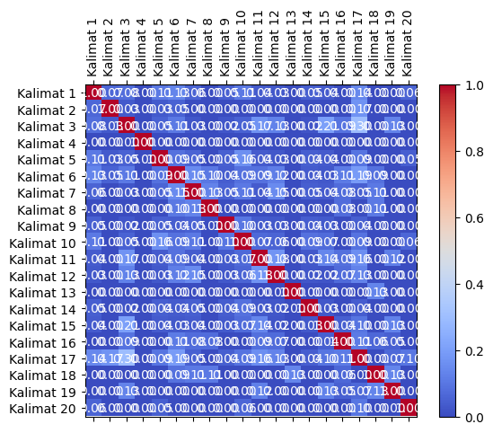
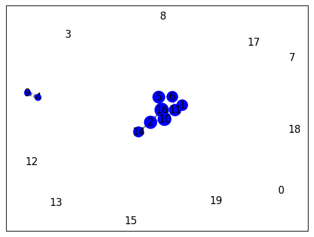

Crawling data Berita#
!pip install Sastrawi
from nltk.tokenize import word_tokenize
from nltk.corpus import stopwords
from sklearn.feature_extraction.text import TfidfVectorizer
from sklearn.feature_extraction.text import CountVectorizer
from Sastrawi.Stemmer.StemmerFactory import StemmerFactory
import warnings
import pandas as pd
import numpy as np
import nltk
import re
import csv
nltk.download('stopwords')
nltk.download('punkt')
warnings.filterwarnings('ignore')
Requirement already satisfied: Sastrawi in /usr/local/lib/python3.10/dist-packages (1.0.1)
[nltk_data] Downloading package stopwords to /root/nltk_data...
[nltk_data] Package stopwords is already up-to-date!
[nltk_data] Downloading package punkt to /root/nltk_data...
[nltk_data] Package punkt is already up-to-date!
import requests
from bs4 import BeautifulSoup
import nltk
import pandas as pd
# Unduh konten halaman web berita
url = "https://radarjatim.id/festival-film-pendek-layar-lokal-diserbu-ratusan-pelajar-sma-dan-smk/"
response = requests.get(url)
html = response.text
# Parsing halaman web menggunakan BeautifulSoup
soup = BeautifulSoup(html, 'html.parser')
# Ekstraksi teks dari elemen-elemen yang berisi berita
article = soup.find('div', class_="content-inner") # Sesuaikan dengan struktur HTML halaman web berita
# Periksa apakah elemen article ada sebelum mencoba mengambil teksnya
if article is not None:
article_text = article.get_text()
# Tokenisasi teks menjadi kalimat menggunakan nltk
nltk.download('punkt') # Pastikan Anda sudah mengunduh tokenisasi kalimat nltk
sentences = nltk.sent_tokenize(article_text)
# Cetak kalimat-kalimat
for sentence in sentences:
print(sentence)
else:
print("Elemen berita tidak ditemukan")
SIDOARJO (RadarJatim.id) — Komunitas-komunitas film pendek yang ada di Sidoarjo terus bergerak, mensosialisasikan keberadaan film pendek yang berkembang membaik.
Kali ini bertemakan ‘Keanekaragaman Lokalitas dan Budaya’ pada tanggal 28-29 Oktober 2023 di Gedung Dewan Kesenian Sidoarjo.
Festival yang memutar film ‘Layar Lokal’ mengangkat kearifan lokal dari berbagai wilayah di Indonesia tersebut, tak diduga diserbu oleh para remaja, rata-rata pelajar SMA, SMK Sidoarjo, Surabaya dan sekitarnya.
Sehingga panitia pun harus menambahkan kursi untuk penonton.
Ketua Asfis (Asosiasi Sineas Film Sidoarjo) Rehal Lahir Prias Sumputari mengatakan kalau kegiatannya mempunyai tiga program utama, yaitu pelatihan, workshop dan pemutaran film.
Juga membantu teman-teman komunitas film yang ada di Sidoarjo, khususnya untuk mendistribusikan karya-karyanya ke berbagai festival.
“Karena kebanyakan teman-teman saat ini kendalanya adalah bagaimana film ini setelah syuting.
Itu mau dikemanakan, teman-teman masih bingung, apa saja yang harus disiapkan.
Itu menjadi tugas kami untuk bersama-sama kita jalan lebih baik sebagai pembuat film.
Jadi tidak hanya membuat film, tidak hanya film jadi disimpan dalam hard disk, tapi film itu bisa berkeliling dan bertemu penontonnya,” ungkap Rehal.
Kemudian sekedar informasi juga, Layar Lokal ini merupakan festival film independen satu-satunya di Jawa Timur yang masih bertahan saat ini.
Yang lainnya kebanyakan dari kampus, dari instansi pemerintah, kemudian di tahun 2019 atau 2018 ya, di Surabaya itu masih ada satu festival film independen yang bergengsi namanya Festival Kecil, namun perjalanannya terhenti.
“Dan saat ini kita Alhamdulillah sudah berjalan selama 4 tahun dan semoga bisa berjalan di tahun-tahun selanjutnya.
Tahun ini kita kembali membuka submission, pendaftaran film untuk tingkat nasional.
Ada 125 film yang mendaftarkan dalam Layar Lokal, kemudian dari 16 provinsi yang ada di Indonesia, mulai dari Aceh sampai Nusa Tenggara Barat.
Pesen saya buat teman-teman, ini festival gratis, full gratis, kalian bisa menikmati film-film lokal dari berbagai daerah,” jelasnya.
“Kita bisa belajar tentang kearifan lokal, maupun budaya yang ada di daerah-daerah di luar Sidoarjo melalui festival film ini.
Semoga teman-teman bisa hadir dan bisa menonton, nantinya akan ada diskusi juga dengan para filmmakernya.
Filmmaker yang akan hadir sekitar 18 tamu dari luar kota, yang terutama film-filmnya lolos dalam Layar Lokal.
Jadi kalian bisa berinteraksi langsung dengan para pembuatnya, kita belajar langsung dengan ekspertnya,” pungkas Rehal.
(mad)
Tags: ASFISfilmKearifanLayarLokalPendekradarjatim.id
[nltk_data] Downloading package punkt to /root/nltk_data...
[nltk_data] Package punkt is already up-to-date!
# Inisialisasi DataFrame
df = pd.DataFrame(columns=["Kalimat"])
df["Kalimat"] = sentences
df
| Kalimat | |
|---|---|
| 0 | \nSIDOARJO (RadarJatim.id) — Komunitas-komunit... |
| 1 | Kali ini bertemakan ‘Keanekaragaman Lokalitas ... |
| 2 | Festival yang memutar film ‘Layar Lokal’ menga... |
| 3 | Sehingga panitia pun harus menambahkan kursi u... |
| 4 | Ketua Asfis (Asosiasi Sineas Film Sidoarjo) Re... |
| 5 | Juga membantu teman-teman komunitas film yang ... |
| 6 | “Karena kebanyakan teman-teman saat ini kendal... |
| 7 | Itu mau dikemanakan, teman-teman masih bingung... |
| 8 | Itu menjadi tugas kami untuk bersama-sama kita... |
| 9 | Jadi tidak hanya membuat film, tidak hanya fil... |
| 10 | Kemudian sekedar informasi juga, Layar Lokal i... |
| 11 | Yang lainnya kebanyakan dari kampus, dari inst... |
| 12 | “Dan saat ini kita Alhamdulillah sudah berjala... |
| 13 | Tahun ini kita kembali membuka submission, pen... |
| 14 | Ada 125 film yang mendaftarkan dalam Layar Lok... |
| 15 | Pesen saya buat teman-teman, ini festival grat... |
| 16 | “Kita bisa belajar tentang kearifan lokal, mau... |
| 17 | Semoga teman-teman bisa hadir dan bisa menonto... |
| 18 | Filmmaker yang akan hadir sekitar 18 tamu dari... |
| 19 | Jadi kalian bisa berinteraksi langsung dengan ... |
| 20 | (mad)\nTags: ASFISfilmKearifanLayarLokalPendek... |
# Lowercasing
article_text = article_text.lower()
# Cleaning
article_text = ''.join(e for e in article_text if (e.isalnum() or e.isspace() or e == '.'))
# Hapus Angka
article_text = ''.join([char for char in article_text if not char.isdigit()])
# Tokenisasi teks menjadi kalimat menggunakan nltk
nltk.download('punkt')
sentences = nltk.sent_tokenize(article_text)
# Tokenisasi setiap kalimat menjadi kata-kata
words = [nltk.word_tokenize(sentence) for sentence in sentences]
[nltk_data] Downloading package punkt to /root/nltk_data...
[nltk_data] Package punkt is already up-to-date!
#custome stopword
from nltk.corpus import stopwords
# Mengambil daftar stopword bahasa Indonesia dari NLTK
stopwords_indonesia = set(stopwords.words("indonesian"))
# Sekarang, Anda memiliki daftar stopword yang telah diperbarui
print(stopwords_indonesia)
{'tersampaikan', 'disampaikan', 'bukanlah', 'bermacam-macam', 'berikutnya', 'dahulu', 'menyebutkan', 'kepada', 'menanya', 'teringat-ingat', 'antara', 'berjumlah', 'kalaulah', 'nyaris', 'suatu', 'mengibaratkannya', 'perlukah', 'dituturkannya', 'mengingat', 'apaan', 'setidaknya', 'terjadilah', 'diucapkan', 'keluar', 'tahun', 'disebutkannya', 'kemungkinannya', 'kiranya', 'menjawab', 'pasti', 'tampak', 'beri', 'masa', 'dipastikan', 'bisakah', 'makin', 'rasa', 'seberapa', 'berapapun', 'kapankah', 'dilakukan', 'maka', 'tiap', 'usai', 'minta', 'menuturkan', 'tandasnya', 'lah', 'ditambahkan', 'hanya', 'mula', 'sebesar', 'terhadap', 'setidak-tidaknya', 'umum', 'wong', 'sampai-sampai', 'diketahuinya', 'amat', 'memisalkan', 'kala', 'sekitar', 'kok', 'didapat', 'memperlihatkan', 'wah', 'diberi', 'tinggi', 'akhir', 'agak', 'dimungkinkan', 'meskipun', 'sebagaimana', 'begitukah', 'semula', 'sebanyak', 'semasih', 'bagian', 'terus', 'keinginan', 'dikarenakan', 'siapakah', 'diperlihatkan', 'begini', 'tak', 'terdapat', 'bersama', 'sendirinya', 'sesampai', 'telah', 'itulah', 'caranya', 'manalagi', 'inilah', 'dikatakan', 'pastilah', 'percuma', 'diakhiri', 'seingat', 'diperbuatnya', 'beginilah', 'berujar', 'jumlah', 'sebisanya', 'keduanya', 'mengenai', 'sekadarnya', 'meyakini', 'sementara', 'sekarang', 'bakalan', 'saat', 'hendak', 'menambahkan', 'mengerjakan', 'macam', 'tetapi', 'dapat', 'entah', 'sewaktu', 'dibuat', 'kenapa', 'sepantasnya', 'ketika', 'soalnya', 'karenanya', 'lainnya', 'ditandaskan', 'bahwa', 'katakan', 'buat', 'segera', 'sebaliknya', 'terlihat', 'sebab', 'melihatnya', 'memang', 'juga', 'harus', 'hendaknya', 'asal', 'seorang', 'ujarnya', 'cukup', 'seketika', 'tambahnya', 'dimintai', 'merasa', 'sebenarnya', 'tiba', 'semaunya', 'sudah', 'sebut', 'kamulah', 'dipergunakan', 'baik', 'agaknya', 'dibuatnya', 'selalu', 'berkenaan', 'kata', 'mendatangi', 'pertama-tama', 'bagaimanapun', 'berturut', 'dini', 'berlainan', 'semampu', 'ibaratnya', 'ungkapnya', 'ialah', 'berupa', 'sebaik-baiknya', 'diketahui', 'tetap', 'dulu', 'aku', 'betulkah', 'berdatangan', 'dijawab', 'mempunyai', 'bukan', 'perlunya', 'siapapun', 'selama', 'ditunjuki', 'satu', 'sekalian', 'terjadi', 'kapanpun', 'kalau', 'soal', 'lagian', 'sejauh', 'diinginkan', 'diantara', 'mulanya', 'ditunjuk', 'rasanya', 'mengibaratkan', 'mungkin', 'hari', 'menjadi', 'selama-lamanya', 'tidakkah', 'adalah', 'memungkinkan', 'luar', 'berapa', 'disebut', 'jelaskan', 'sebagian', 'tersebut', 'kemungkinan', 'setelah', 'bermacam', 'per', 'masih', 'sempat', 'pentingnya', 'sedikitnya', 'sekaligus', 'sebelumnya', 'ibaratkan', 'bagai', 'menginginkan', 'lanjut', 'beberapa', 'teringat', 'diri', 'itu', 'melakukan', 'agar', 'secukupnya', 'masihkah', 'sejumlah', 'tampaknya', 'terakhir', 'dijelaskannya', 'bakal', 'sedang', 'menunjuknya', 'menjelaskan', 'diberikan', 'seluruh', 'bersiap-siap', 'berkali-kali', 'diperbuat', 'semisalnya', 'selanjutnya', 'jangankan', 'mengetahui', 'amatlah', 'katanya', 'kinilah', 'ke', 'mempertanyakan', 'dipersoalkan', 'saling', 'sejenak', 'terutama', 'ungkap', 'masalah', 'wahai', 'seringnya', 'beginikah', 'kamu', 'keseluruhan', 'hampir', 'dikatakannya', 'saatnya', 'diperlukan', 'walaupun', 'adanya', 'ingat', 'bagi', 'kamilah', 'dialah', 'seterusnya', 'benarkah', 'semasa', 'dan', 'terbanyak', 'demikian', 'berkata', 'itukah', 'terlebih', 'tanpa', 'diibaratkannya', 'bolehlah', 'sebuah', 'daripada', 'jelasnya', 'ingin', 'sebutnya', 'setempat', 'ternyata', 'bekerja', 'pertanyaan', 'tepat', 'diibaratkan', 'begitu', 'semata', 'awal', 'terdahulu', 'inginkan', 'menurut', 'tanya', 'misal', 'perlu', 'tahu', 'tutur', 'pantas', 'supaya', 'tentulah', 'memberi', 'diingatkan', 'ditujukan', 'masing', 'hal', 'membuat', 'jawab', 'sajalah', 'makanya', 'waduh', 'penting', 'sehingga', 'dia', 'antaranya', 'kami', 'mampu', 'seperti', 'untuk', 'menggunakan', 'berkehendak', 'katakanlah', 'sesaat', 'mendatang', 'oleh', 'dikerjakan', 'tanyanya', 'menegaskan', 'dikira', 'rupanya', 'awalnya', 'menanti', 'segalanya', 'rata', 'seusai', 'dimaksud', 'khususnya', 'mengakhiri', 'diperlukannya', 'keterlaluan', 'lamanya', 'bahkan', 'demikianlah', 'dituturkan', 'bolehkah', 'berlangsung', 'tadinya', 'menunjuk', 'melainkan', 'mulai', 'berikut', 'selaku', 'apabila', 'meski', 'ditunjukkan', 'jadinya', 'sebelum', 'ataupun', 'akhiri', 'cukuplah', 'kelihatan', 'lalu', 'lebih', 'sesudah', 'ditunjukkannya', 'sudahkah', 'lewat', 'mengapa', 'enggaknya', 'dimaksudkannya', 'sekalipun', 'sendiri', 'semampunya', 'sekurang-kurangnya', 'meyakinkan', 'sejak', 'sambil', 'dong', 'artinya', 'kira-kira', 'setengah', 'sesuatunya', 'sela', 'banyak', 'turut', 'olehnya', 'waktu', 'pertama', 'andalah', 'tentunya', 'apakah', 'inikah', 'jika', 'memihak', 'sebagainya', 'sendirian', 'persoalan', 'berapakah', 'bukannya', 'bertanya', 'ada', 'sebetulnya', 'hendaklah', 'akankah', 'bertanya-tanya', 'seseorang', 'asalkan', 'ingat-ingat', 'bagaikan', 'besar', 'lagi', 'kebetulan', 'dilalui', 'berakhirlah', 'lama', 'berlebihan', 'misalnya', 'sepihak', 'sesama', 'mendapat', 'ini', 'ditanya', 'pada', 'jumlahnya', 'serta', 'tentang', 'sesekali', 'jelaslah', 'meminta', 'semacam', 'seolah', 'begitupun', 'bermaksud', 'akhirnya', 'jadi', 'berada', 'saja', 'kembali', 'mengungkapkan', 'yakin', 'yang', 'memberikan', 'kita', 'sekecil', 'tertuju', 'benarlah', 'mengira', 'sini', 'mempergunakan', 'sayalah', 'namun', 'pernah', 'terlalu', 'akan', 'pihak', 'jelas', 'sepertinya', 'justru', 'ucapnya', 'diingat', 'kasus', 'diantaranya', 'menanti-nanti', 'pula', 'bapak', 'bertutur', 'yakni', 'empat', 'menyiapkan', 'dipertanyakan', 'diucapkannya', 'apatah', 'pihaknya', 'tidaklah', 'mempersoalkan', 'bila', 'kelima', 'lanjutnya', 'semua', 'dijelaskan', 'kira', 'terkira', 'diminta', 'dimisalkan', 'harusnya', 'keseluruhannya', 'memperkirakan', 'menanyakan', 'semakin', 'walau', 'entahlah', 'dalam', 'berbagai', 'memastikan', 'menghendaki', 'sebegitu', 'naik', 'ujar', 'ditunjuknya', 'sekitarnya', 'dari', 'jadilah', 'di', 'baru', 'tunjuk', 'berapalah', 'secara', 'tentu', 'sebabnya', 'sedangkan', 'melalui', 'sepantasnyalah', 'segala', 'tiba-tiba', 'sesuatu', 'ditanyai', 'balik', 'malahan', 'antar', 'manakala', 'terasa', 'kecil', 'apa', 'nanti', 'malah', 'mengucapkan', 'diungkapkan', 'sekali-kali', 'ibarat', 'belakang', 'dekat', 'panjang', 'biasanya', 'tersebutlah', 'berawal', 'kelihatannya', 'memulai', 'sekali', 'serupa', 'siap', 'tapi', 'ia', 'enggak', 'menantikan', 'sekurangnya', 'setinggi', 'diberikannya', 'seluruhnya', 'menyeluruh', 'diakhirinya', 'usah', 'para', 'dirinya', 'merupakan', 'siapa', 'kurang', 'lain', 'seharusnya', 'sampai', 'karena', 'tuturnya', 'menyangkut', 'terdiri', 'mampukah', 'merekalah', 'toh', 'kemudian', 'sekadar', 'dimaksudnya', 'dimulailah', 'tanyakan', 'kitalah', 'sama', 'bersiap', 'paling', 'datang', 'adapun', 'boleh', 'seolah-olah', 'saya', 'waktunya', 'apalagi', 'belakangan', 'mengucapkannya', 'mau', 'sesudahnya', 'mendapatkan', 'didatangkan', 'kesampaian', 'memerlukan', 'berkeinginan', 'tertentu', 'belum', 'ibu', 'kalian', 'tiga', 'ucap', 'termasuk', 'inginkah', 'maupun', 'anda', 'begitulah', 'betul', 'sama-sama', 'tandas', 'kan', 'bung', 'setiap', 'sesegera', 'berturut-turut', 'bagaimana', 'ikut', 'sebegini', 'selain', 'umumnya', 'dengan', 'menuju', 'menyampaikan', 'nyatanya', 'kalaupun', 'depan', 'sedikit', 'sangatlah', 'janganlah', 'haruslah', 'melihat', 'padahal', 'punya', 'dimulai', 'pukul', 'sedemikian', 'jikalau', 'mengingatkan', 'semisal', 'sana', 'pak', 'bagaimanakah', 'seperlunya', 'tengah', 'bisa', 'nantinya', 'sebutlah', 'cara', 'terjadinya', 'menyatakan', 'sangat', 'mungkinkah', 'kelamaan', 'memintakan', 'benar', 'ditanyakan', 'bukankah', 'kedua', 'mengatakannya', 'se', 'atau', 'diperkirakan', 'padanya', 'bilakah', 'setiba', 'dua', 'berakhirnya', 'digunakan', 'dimaksudkan', 'terhadapnya', 'disebutkan', 'guna', 'keadaan', 'bulan', 'cuma', 'ditegaskan', 'sampaikan', 'mereka', 'belumlah', 'seenaknya', 'dilihat', 'menanyai', 'setibanya', 'jawabnya', 'sebaik', 'mulailah', 'sebaiknya', 'berlalu', 'kini', 'akulah', 'bahwasanya', 'tambah', 'beginian', 'sebagai', 'mendatangkan', 'sekiranya', 'menandaskan', 'sepanjang', 'semuanya', 'biasa', 'sering', 'berikan', 'semata-mata', 'kapan', 'jangan', 'menaiki', 'ataukah', 'memperbuat', 'dimulainya', 'masalahnya', 'berakhir', 'bersama-sama', 'dipunyai', 'gunakan', 'lima', 'mengatakan', 'jauh', 'tadi', 'mempersiapkan', 'menunjuki', 'bermula', 'pun', 'selamanya', 'hanyalah', 'sudahlah', 'tidak', 'tegasnya', 'atas', 'jawaban', 'disini', 'mana', 'masing-masing', 'kepadanya', 'nah', 'menunjukkan', 'sinilah', 'berarti', 'tegas', 'bawah', 'disinilah', 'misalkan', 'yaitu', 'cukupkah', 'mirip', 'pertanyakan', 'tempat', 'demi', 'hingga'}
# Stopword Removal
stop_words = set(stopwords.words('indonesian'))
filtered_sentences = []
for sentence in words:
filtered_sentence = [word for word in sentence if word.lower() not in stop_words]
filtered_sentences.append(filtered_sentence)
# Cetak kalimat-kalimat yang telah diproses
for filtered_sentence in filtered_sentences:
print(filtered_sentence)
# Tutup respons setelah digunakan
response.close()
['sidoarjo', 'radarjatim.id', 'komunitaskomunitas', 'film', 'pendek', 'sidoarjo', 'bergerak', 'mensosialisasikan', 'keberadaan', 'film', 'pendek', 'berkembang', 'membaik', '.']
['kali', 'bertemakan', 'keanekaragaman', 'lokalitas', 'budaya', 'tanggal', 'oktober', 'gedung', 'dewan', 'kesenian', 'sidoarjo', '.']
['festival', 'memutar', 'film', 'layar', 'lokal', 'mengangkat', 'kearifan', 'lokal', 'wilayah', 'indonesia', 'diduga', 'diserbu', 'remaja', 'ratarata', 'pelajar', 'sma', 'smk', 'sidoarjo', 'surabaya', '.']
['panitia', 'kursi', 'penonton', '.']
['ketua', 'asfis', 'asosiasi', 'sineas', 'film', 'sidoarjo', 'rehal', 'lahir', 'prias', 'sumputari', 'kegiatannya', 'program', 'utama', 'pelatihan', 'workshop', 'pemutaran', 'film', '.']
['membantu', 'temanteman', 'komunitas', 'film', 'sidoarjo', 'mendistribusikan', 'karyakaryanya', 'festival', '.']
['kebanyakan', 'temanteman', 'kendalanya', 'film', 'syuting', '.']
['dikemanakan', 'temanteman', 'bingung', 'disiapkan', '.']
['tugas', 'bersamasama', 'jalan', 'pembuat', 'film', '.']
['film', 'film', 'disimpan', 'hard', 'disk', 'film', 'berkeliling', 'bertemu', 'penontonnya', 'rehal', '.']
['sekedar', 'informasi', 'layar', 'lokal', 'festival', 'film', 'independen', 'satusatunya', 'jawa', 'timur', 'bertahan', '.']
['kebanyakan', 'kampus', 'instansi', 'pemerintah', 'ya', 'surabaya', 'festival', 'film', 'independen', 'bergengsi', 'namanya', 'festival', 'perjalanannya', 'terhenti', '.']
['alhamdulillah', 'berjalan', 'semoga', 'berjalan', 'tahuntahun', '.']
['membuka', 'submission', 'pendaftaran', 'film', 'tingkat', 'nasional', '.']
['film', 'mendaftarkan', 'layar', 'lokal', 'provinsi', 'indonesia', 'aceh', 'nusa', 'tenggara', 'barat', '.']
['pesen', 'temanteman', 'festival', 'gratis', 'full', 'gratis', 'menikmati', 'filmfilm', 'lokal', 'daerah', '.']
['belajar', 'kearifan', 'lokal', 'budaya', 'daerahdaerah', 'sidoarjo', 'festival', 'film', '.']
['semoga', 'temanteman', 'hadir', 'menonton', 'diskusi', 'filmmakernya', '.']
['filmmaker', 'hadir', 'tamu', 'kota', 'filmfilmnya', 'lolos', 'layar', 'lokal', '.']
['berinteraksi', 'langsung', 'pembuatnya', 'belajar', 'langsung', 'ekspertnya', 'pungkas', 'rehal.mad', 'tags', 'asfisfilmkearifanlayarlokalpendekradarjatim.id']
pip install tabulate
Requirement already satisfied: tabulate in /usr/local/lib/python3.10/dist-packages (0.9.0)
from tabulate import tabulate
import pandas as pd
from sklearn.feature_extraction.text import TfidfVectorizer
# Assuming filtered_sentences is a list of sentences after stopword removal
# Join the filtered sentences into a list of strings
corpus = [' '.join(sentence) for sentence in filtered_sentences]
# Create the TF-IDF vectorizer
vectorizer = TfidfVectorizer()
# Fit and transform the corpus to get the TF-IDF matrix
tfidf_matrix = vectorizer.fit_transform(corpus)
# Get the feature names (words) from the vectorizer
feature_names = vectorizer.get_feature_names_out()
# Convert the TF-IDF matrix to a Pandas DataFrame for better visualization
df = pd.DataFrame(data=tfidf_matrix.toarray(), columns=feature_names)
# Add a column for the sentences
df.insert(0, 'Kalimat', [' '.join(sentence) for sentence in filtered_sentences])
# Add a column for the sentence numbers
df.insert(0, 'No', range(1, len(filtered_sentences) + 1))
# Add a column for the count of terms in each sentence
df['Term Count'] = df.drop(['Kalimat', 'No'], axis=1).gt(0).sum(axis=1)
# Set the display options for Pandas to show all columns without truncation
pd.set_option("display.max_columns", None)
# Print the DataFrame in a tabular format with borders
table = tabulate(df, headers='keys', tablefmt='fancy_grid', showindex=False)
print(table)
╒══════╤══════════════════════════════════════════════════════════════════════════════════════════════════════════════════════════════════════════════════╤══════════╤═════════════════╤═════════╤═══════════════════════════════════════════════╤════════════╤══════════╤═══════════╤═════════════╤════════════╤════════════════╤════════════╤═══════════════╤══════════════╤═══════════════╤════════════╤══════════════╤═══════════╤═══════════╤══════════╤══════════╤════════════════╤══════════╤══════════╤═══════════════╤═══════════╤═════════════╤════════════╤══════════╤═══════════╤══════════════╤════════════╤══════════╤════════════╤═══════════════╤═════════════╤════════════════╤═════════╤══════════╤══════════╤══════════╤══════════╤══════════╤══════════════╤═════════════╤═════════════╤════════════╤══════════╤══════════╤══════════╤══════════╤═════════════════╤══════════════════╤════════════╤══════════════╤══════════════╤═══════════════╤══════════════╤════════════╤═════════╤═════════════╤══════════════════════╤══════════╤═════════╤═════════╤════════════╤══════════╤══════════╤═════════════╤══════════╤══════════╤═══════════╤════════════╤═══════════╤═══════════╤════════════════╤════════════════════╤══════════════╤═════════════╤════════════╤═════════════════════╤═══════════╤════════════╤══════════╤═══════════╤═══════════╤═══════════╤═════════════╤═══════════╤══════════════╤══════════════╤═════════════╤═══════════════╤══════════╤════════════╤═══════════════╤═════════════════╤═════════╤═════════╤═══════════╤════════════╤═══════════╤══════════════╤════════════╤══════════╤══════════╤═══════════════╤═══════════╤══════════╤════════════╤══════════╤══════════╤══════════╤══════════════╤═════════════╤════════════╤═══════════╤══════════╤══════════════╤══════════╤═══════════╤══════════════╤════════════╤════════════╤══════════╤═══════════╤══════════╤═════════╤═══════════╤════════════╤══════════╤══════════════╕
│ No │ Kalimat │ aceh │ alhamdulillah │ asfis │ asfisfilmkearifanlayarlokalpendekradarjatim │ asosiasi │ barat │ belajar │ bergengsi │ bergerak │ berinteraksi │ berjalan │ berkeliling │ berkembang │ bersamasama │ bertahan │ bertemakan │ bertemu │ bingung │ budaya │ daerah │ daerahdaerah │ dewan │ diduga │ dikemanakan │ diserbu │ disiapkan │ disimpan │ disk │ diskusi │ ekspertnya │ festival │ film │ filmfilm │ filmfilmnya │ filmmaker │ filmmakernya │ full │ gedung │ gratis │ hadir │ hard │ id │ independen │ indonesia │ informasi │ instansi │ jalan │ jawa │ kali │ kampus │ karyakaryanya │ keanekaragaman │ kearifan │ kebanyakan │ keberadaan │ kegiatannya │ kendalanya │ kesenian │ ketua │ komunitas │ komunitaskomunitas │ kota │ kursi │ lahir │ langsung │ layar │ lokal │ lokalitas │ lolos │ mad │ membaik │ membantu │ membuka │ memutar │ mendaftarkan │ mendistribusikan │ mengangkat │ menikmati │ menonton │ mensosialisasikan │ namanya │ nasional │ nusa │ oktober │ panitia │ pelajar │ pelatihan │ pembuat │ pembuatnya │ pemerintah │ pemutaran │ pendaftaran │ pendek │ penonton │ penontonnya │ perjalanannya │ pesen │ prias │ program │ provinsi │ pungkas │ radarjatim │ ratarata │ rehal │ remaja │ satusatunya │ sekedar │ semoga │ sidoarjo │ sineas │ sma │ smk │ submission │ sumputari │ surabaya │ syuting │ tags │ tahuntahun │ tamu │ tanggal │ temanteman │ tenggara │ terhenti │ timur │ tingkat │ tugas │ utama │ wilayah │ workshop │ ya │ Term Count │
╞══════╪══════════════════════════════════════════════════════════════════════════════════════════════════════════════════════════════════════════════════╪══════════╪═════════════════╪═════════╪═══════════════════════════════════════════════╪════════════╪══════════╪═══════════╪═════════════╪════════════╪════════════════╪════════════╪═══════════════╪══════════════╪═══════════════╪════════════╪══════════════╪═══════════╪═══════════╪══════════╪══════════╪════════════════╪══════════╪══════════╪═══════════════╪═══════════╪═════════════╪════════════╪══════════╪═══════════╪══════════════╪════════════╪══════════╪════════════╪═══════════════╪═════════════╪════════════════╪═════════╪══════════╪══════════╪══════════╪══════════╪══════════╪══════════════╪═════════════╪═════════════╪════════════╪══════════╪══════════╪══════════╪══════════╪═════════════════╪══════════════════╪════════════╪══════════════╪══════════════╪═══════════════╪══════════════╪════════════╪═════════╪═════════════╪══════════════════════╪══════════╪═════════╪═════════╪════════════╪══════════╪══════════╪═════════════╪══════════╪══════════╪═══════════╪════════════╪═══════════╪═══════════╪════════════════╪════════════════════╪══════════════╪═════════════╪════════════╪═════════════════════╪═══════════╪════════════╪══════════╪═══════════╪═══════════╪═══════════╪═════════════╪═══════════╪══════════════╪══════════════╪═════════════╪═══════════════╪══════════╪════════════╪═══════════════╪═════════════════╪═════════╪═════════╪═══════════╪════════════╪═══════════╪══════════════╪════════════╪══════════╪══════════╪═══════════════╪═══════════╪══════════╪════════════╪══════════╪══════════╪══════════╪══════════════╪═════════════╪════════════╪═══════════╪══════════╪══════════════╪══════════╪═══════════╪══════════════╪════════════╪════════════╪══════════╪═══════════╪══════════╪═════════╪═══════════╪════════════╪══════════╪══════════════╡
│ 1 │ sidoarjo radarjatim.id komunitaskomunitas film pendek sidoarjo bergerak mensosialisasikan keberadaan film pendek berkembang membaik . │ 0 │ 0 │ 0 │ 0 │ 0 │ 0 │ 0 │ 0 │ 0.266116 │ 0 │ 0 │ 0 │ 0.266116 │ 0 │ 0 │ 0 │ 0 │ 0 │ 0 │ 0 │ 0 │ 0 │ 0 │ 0 │ 0 │ 0 │ 0 │ 0 │ 0 │ 0 │ 0 │ 0.234971 │ 0 │ 0 │ 0 │ 0 │ 0 │ 0 │ 0 │ 0 │ 0 │ 0.23392 │ 0 │ 0 │ 0 │ 0 │ 0 │ 0 │ 0 │ 0 │ 0 │ 0 │ 0 │ 0 │ 0.266116 │ 0 │ 0 │ 0 │ 0 │ 0 │ 0.266116 │ 0 │ 0 │ 0 │ 0 │ 0 │ 0 │ 0 │ 0 │ 0 │ 0.266116 │ 0 │ 0 │ 0 │ 0 │ 0 │ 0 │ 0 │ 0 │ 0.266116 │ 0 │ 0 │ 0 │ 0 │ 0 │ 0 │ 0 │ 0 │ 0 │ 0 │ 0 │ 0 │ 0.532232 │ 0 │ 0 │ 0 │ 0 │ 0 │ 0 │ 0 │ 0 │ 0.266116 │ 0 │ 0 │ 0 │ 0 │ 0 │ 0 │ 0.333281 │ 0 │ 0 │ 0 │ 0 │ 0 │ 0 │ 0 │ 0 │ 0 │ 0 │ 0 │ 0 │ 0 │ 0 │ 0 │ 0 │ 0 │ 0 │ 0 │ 0 │ 0 │ 11 │
├──────┼──────────────────────────────────────────────────────────────────────────────────────────────────────────────────────────────────────────────────┼──────────┼─────────────────┼─────────┼───────────────────────────────────────────────┼────────────┼──────────┼───────────┼─────────────┼────────────┼────────────────┼────────────┼───────────────┼──────────────┼───────────────┼────────────┼──────────────┼───────────┼───────────┼──────────┼──────────┼────────────────┼──────────┼──────────┼───────────────┼───────────┼─────────────┼────────────┼──────────┼───────────┼──────────────┼────────────┼──────────┼────────────┼───────────────┼─────────────┼────────────────┼─────────┼──────────┼──────────┼──────────┼──────────┼──────────┼──────────────┼─────────────┼─────────────┼────────────┼──────────┼──────────┼──────────┼──────────┼─────────────────┼──────────────────┼────────────┼──────────────┼──────────────┼───────────────┼──────────────┼────────────┼─────────┼─────────────┼──────────────────────┼──────────┼─────────┼─────────┼────────────┼──────────┼──────────┼─────────────┼──────────┼──────────┼───────────┼────────────┼───────────┼───────────┼────────────────┼────────────────────┼──────────────┼─────────────┼────────────┼─────────────────────┼───────────┼────────────┼──────────┼───────────┼───────────┼───────────┼─────────────┼───────────┼──────────────┼──────────────┼─────────────┼───────────────┼──────────┼────────────┼───────────────┼─────────────────┼─────────┼─────────┼───────────┼────────────┼───────────┼──────────────┼────────────┼──────────┼──────────┼───────────────┼───────────┼──────────┼────────────┼──────────┼──────────┼──────────┼──────────────┼─────────────┼────────────┼───────────┼──────────┼──────────────┼──────────┼───────────┼──────────────┼────────────┼────────────┼──────────┼───────────┼──────────┼─────────┼───────────┼────────────┼──────────┼──────────────┤
│ 2 │ kali bertemakan keanekaragaman lokalitas budaya tanggal oktober gedung dewan kesenian sidoarjo . │ 0 │ 0 │ 0 │ 0 │ 0 │ 0 │ 0 │ 0 │ 0 │ 0 │ 0 │ 0 │ 0 │ 0 │ 0 │ 0.313654 │ 0 │ 0 │ 0.275707 │ 0 │ 0 │ 0.313654 │ 0 │ 0 │ 0 │ 0 │ 0 │ 0 │ 0 │ 0 │ 0 │ 0 │ 0 │ 0 │ 0 │ 0 │ 0 │ 0.313654 │ 0 │ 0 │ 0 │ 0 │ 0 │ 0 │ 0 │ 0 │ 0 │ 0 │ 0.313654 │ 0 │ 0 │ 0.313654 │ 0 │ 0 │ 0 │ 0 │ 0 │ 0.313654 │ 0 │ 0 │ 0 │ 0 │ 0 │ 0 │ 0 │ 0 │ 0 │ 0.313654 │ 0 │ 0 │ 0 │ 0 │ 0 │ 0 │ 0 │ 0 │ 0 │ 0 │ 0 │ 0 │ 0 │ 0 │ 0 │ 0.313654 │ 0 │ 0 │ 0 │ 0 │ 0 │ 0 │ 0 │ 0 │ 0 │ 0 │ 0 │ 0 │ 0 │ 0 │ 0 │ 0 │ 0 │ 0 │ 0 │ 0 │ 0 │ 0 │ 0 │ 0 │ 0.196408 │ 0 │ 0 │ 0 │ 0 │ 0 │ 0 │ 0 │ 0 │ 0 │ 0 │ 0.313654 │ 0 │ 0 │ 0 │ 0 │ 0 │ 0 │ 0 │ 0 │ 0 │ 0 │ 11 │
├──────┼──────────────────────────────────────────────────────────────────────────────────────────────────────────────────────────────────────────────────┼──────────┼─────────────────┼─────────┼───────────────────────────────────────────────┼────────────┼──────────┼───────────┼─────────────┼────────────┼────────────────┼────────────┼───────────────┼──────────────┼───────────────┼────────────┼──────────────┼───────────┼───────────┼──────────┼──────────┼────────────────┼──────────┼──────────┼───────────────┼───────────┼─────────────┼────────────┼──────────┼───────────┼──────────────┼────────────┼──────────┼────────────┼───────────────┼─────────────┼────────────────┼─────────┼──────────┼──────────┼──────────┼──────────┼──────────┼──────────────┼─────────────┼─────────────┼────────────┼──────────┼──────────┼──────────┼──────────┼─────────────────┼──────────────────┼────────────┼──────────────┼──────────────┼───────────────┼──────────────┼────────────┼─────────┼─────────────┼──────────────────────┼──────────┼─────────┼─────────┼────────────┼──────────┼──────────┼─────────────┼──────────┼──────────┼───────────┼────────────┼───────────┼───────────┼────────────────┼────────────────────┼──────────────┼─────────────┼────────────┼─────────────────────┼───────────┼────────────┼──────────┼───────────┼───────────┼───────────┼─────────────┼───────────┼──────────────┼──────────────┼─────────────┼───────────────┼──────────┼────────────┼───────────────┼─────────────────┼─────────┼─────────┼───────────┼────────────┼───────────┼──────────────┼────────────┼──────────┼──────────┼───────────────┼───────────┼──────────┼────────────┼──────────┼──────────┼──────────┼──────────────┼─────────────┼────────────┼───────────┼──────────┼──────────────┼──────────┼───────────┼──────────────┼────────────┼────────────┼──────────┼───────────┼──────────┼─────────┼───────────┼────────────┼──────────┼──────────────┤
│ 3 │ festival memutar film layar lokal mengangkat kearifan lokal wilayah indonesia diduga diserbu remaja ratarata pelajar sma smk sidoarjo surabaya . │ 0 │ 0 │ 0 │ 0 │ 0 │ 0 │ 0 │ 0 │ 0 │ 0 │ 0 │ 0 │ 0 │ 0 │ 0 │ 0 │ 0 │ 0 │ 0 │ 0 │ 0 │ 0 │ 0.254877 │ 0 │ 0.254877 │ 0 │ 0 │ 0 │ 0 │ 0 │ 0.159602 │ 0.112524 │ 0 │ 0 │ 0 │ 0 │ 0 │ 0 │ 0 │ 0 │ 0 │ 0 │ 0 │ 0.224041 │ 0 │ 0 │ 0 │ 0 │ 0 │ 0 │ 0 │ 0 │ 0.224041 │ 0 │ 0 │ 0 │ 0 │ 0 │ 0 │ 0 │ 0 │ 0 │ 0 │ 0 │ 0 │ 0.185192 │ 0.319205 │ 0 │ 0 │ 0 │ 0 │ 0 │ 0 │ 0.254877 │ 0 │ 0 │ 0.254877 │ 0 │ 0 │ 0 │ 0 │ 0 │ 0 │ 0 │ 0 │ 0.254877 │ 0 │ 0 │ 0 │ 0 │ 0 │ 0 │ 0 │ 0 │ 0 │ 0 │ 0 │ 0 │ 0 │ 0 │ 0 │ 0 │ 0.254877 │ 0 │ 0.254877 │ 0 │ 0 │ 0 │ 0.159602 │ 0 │ 0.254877 │ 0.254877 │ 0 │ 0 │ 0.224041 │ 0 │ 0 │ 0 │ 0 │ 0 │ 0 │ 0 │ 0 │ 0 │ 0 │ 0 │ 0 │ 0.254877 │ 0 │ 0 │ 18 │
├──────┼──────────────────────────────────────────────────────────────────────────────────────────────────────────────────────────────────────────────────┼──────────┼─────────────────┼─────────┼───────────────────────────────────────────────┼────────────┼──────────┼───────────┼─────────────┼────────────┼────────────────┼────────────┼───────────────┼──────────────┼───────────────┼────────────┼──────────────┼───────────┼───────────┼──────────┼──────────┼────────────────┼──────────┼──────────┼───────────────┼───────────┼─────────────┼────────────┼──────────┼───────────┼──────────────┼────────────┼──────────┼────────────┼───────────────┼─────────────┼────────────────┼─────────┼──────────┼──────────┼──────────┼──────────┼──────────┼──────────────┼─────────────┼─────────────┼────────────┼──────────┼──────────┼──────────┼──────────┼─────────────────┼──────────────────┼────────────┼──────────────┼──────────────┼───────────────┼──────────────┼────────────┼─────────┼─────────────┼──────────────────────┼──────────┼─────────┼─────────┼────────────┼──────────┼──────────┼─────────────┼──────────┼──────────┼───────────┼────────────┼───────────┼───────────┼────────────────┼────────────────────┼──────────────┼─────────────┼────────────┼─────────────────────┼───────────┼────────────┼──────────┼───────────┼───────────┼───────────┼─────────────┼───────────┼──────────────┼──────────────┼─────────────┼───────────────┼──────────┼────────────┼───────────────┼─────────────────┼─────────┼─────────┼───────────┼────────────┼───────────┼──────────────┼────────────┼──────────┼──────────┼───────────────┼───────────┼──────────┼────────────┼──────────┼──────────┼──────────┼──────────────┼─────────────┼────────────┼───────────┼──────────┼──────────────┼──────────┼───────────┼──────────────┼────────────┼────────────┼──────────┼───────────┼──────────┼─────────┼───────────┼────────────┼──────────┼──────────────┤
│ 4 │ panitia kursi penonton . │ 0 │ 0 │ 0 │ 0 │ 0 │ 0 │ 0 │ 0 │ 0 │ 0 │ 0 │ 0 │ 0 │ 0 │ 0 │ 0 │ 0 │ 0 │ 0 │ 0 │ 0 │ 0 │ 0 │ 0 │ 0 │ 0 │ 0 │ 0 │ 0 │ 0 │ 0 │ 0 │ 0 │ 0 │ 0 │ 0 │ 0 │ 0 │ 0 │ 0 │ 0 │ 0 │ 0 │ 0 │ 0 │ 0 │ 0 │ 0 │ 0 │ 0 │ 0 │ 0 │ 0 │ 0 │ 0 │ 0 │ 0 │ 0 │ 0 │ 0 │ 0 │ 0 │ 0.57735 │ 0 │ 0 │ 0 │ 0 │ 0 │ 0 │ 0 │ 0 │ 0 │ 0 │ 0 │ 0 │ 0 │ 0 │ 0 │ 0 │ 0 │ 0 │ 0 │ 0 │ 0 │ 0.57735 │ 0 │ 0 │ 0 │ 0 │ 0 │ 0 │ 0 │ 0 │ 0.57735 │ 0 │ 0 │ 0 │ 0 │ 0 │ 0 │ 0 │ 0 │ 0 │ 0 │ 0 │ 0 │ 0 │ 0 │ 0 │ 0 │ 0 │ 0 │ 0 │ 0 │ 0 │ 0 │ 0 │ 0 │ 0 │ 0 │ 0 │ 0 │ 0 │ 0 │ 0 │ 0 │ 0 │ 0 │ 0 │ 0 │ 3 │
├──────┼──────────────────────────────────────────────────────────────────────────────────────────────────────────────────────────────────────────────────┼──────────┼─────────────────┼─────────┼───────────────────────────────────────────────┼────────────┼──────────┼───────────┼─────────────┼────────────┼────────────────┼────────────┼───────────────┼──────────────┼───────────────┼────────────┼──────────────┼───────────┼───────────┼──────────┼──────────┼────────────────┼──────────┼──────────┼───────────────┼───────────┼─────────────┼────────────┼──────────┼───────────┼──────────────┼────────────┼──────────┼────────────┼───────────────┼─────────────┼────────────────┼─────────┼──────────┼──────────┼──────────┼──────────┼──────────┼──────────────┼─────────────┼─────────────┼────────────┼──────────┼──────────┼──────────┼──────────┼─────────────────┼──────────────────┼────────────┼──────────────┼──────────────┼───────────────┼──────────────┼────────────┼─────────┼─────────────┼──────────────────────┼──────────┼─────────┼─────────┼────────────┼──────────┼──────────┼─────────────┼──────────┼──────────┼───────────┼────────────┼───────────┼───────────┼────────────────┼────────────────────┼──────────────┼─────────────┼────────────┼─────────────────────┼───────────┼────────────┼──────────┼───────────┼───────────┼───────────┼─────────────┼───────────┼──────────────┼──────────────┼─────────────┼───────────────┼──────────┼────────────┼───────────────┼─────────────────┼─────────┼─────────┼───────────┼────────────┼───────────┼──────────────┼────────────┼──────────┼──────────┼───────────────┼───────────┼──────────┼────────────┼──────────┼──────────┼──────────┼──────────────┼─────────────┼────────────┼───────────┼──────────┼──────────────┼──────────┼───────────┼──────────────┼────────────┼────────────┼──────────┼───────────┼──────────┼─────────┼───────────┼────────────┼──────────┼──────────────┤
│ 5 │ ketua asfis asosiasi sineas film sidoarjo rehal lahir prias sumputari kegiatannya program utama pelatihan workshop pemutaran film . │ 0 │ 0 │ 0.25993 │ 0 │ 0.25993 │ 0 │ 0 │ 0 │ 0 │ 0 │ 0 │ 0 │ 0 │ 0 │ 0 │ 0 │ 0 │ 0 │ 0 │ 0 │ 0 │ 0 │ 0 │ 0 │ 0 │ 0 │ 0 │ 0 │ 0 │ 0 │ 0 │ 0.229509 │ 0 │ 0 │ 0 │ 0 │ 0 │ 0 │ 0 │ 0 │ 0 │ 0 │ 0 │ 0 │ 0 │ 0 │ 0 │ 0 │ 0 │ 0 │ 0 │ 0 │ 0 │ 0 │ 0 │ 0.25993 │ 0 │ 0 │ 0.25993 │ 0 │ 0 │ 0 │ 0 │ 0.25993 │ 0 │ 0 │ 0 │ 0 │ 0 │ 0 │ 0 │ 0 │ 0 │ 0 │ 0 │ 0 │ 0 │ 0 │ 0 │ 0 │ 0 │ 0 │ 0 │ 0 │ 0 │ 0 │ 0.25993 │ 0 │ 0 │ 0 │ 0.25993 │ 0 │ 0 │ 0 │ 0 │ 0 │ 0 │ 0.25993 │ 0.25993 │ 0 │ 0 │ 0 │ 0 │ 0.20617 │ 0 │ 0 │ 0 │ 0 │ 0.162767 │ 0.25993 │ 0 │ 0 │ 0 │ 0.25993 │ 0 │ 0 │ 0 │ 0 │ 0 │ 0 │ 0 │ 0 │ 0 │ 0 │ 0 │ 0 │ 0.25993 │ 0 │ 0.25993 │ 0 │ 16 │
├──────┼──────────────────────────────────────────────────────────────────────────────────────────────────────────────────────────────────────────────────┼──────────┼─────────────────┼─────────┼───────────────────────────────────────────────┼────────────┼──────────┼───────────┼─────────────┼────────────┼────────────────┼────────────┼───────────────┼──────────────┼───────────────┼────────────┼──────────────┼───────────┼───────────┼──────────┼──────────┼────────────────┼──────────┼──────────┼───────────────┼───────────┼─────────────┼────────────┼──────────┼───────────┼──────────────┼────────────┼──────────┼────────────┼───────────────┼─────────────┼────────────────┼─────────┼──────────┼──────────┼──────────┼──────────┼──────────┼──────────────┼─────────────┼─────────────┼────────────┼──────────┼──────────┼──────────┼──────────┼─────────────────┼──────────────────┼────────────┼──────────────┼──────────────┼───────────────┼──────────────┼────────────┼─────────┼─────────────┼──────────────────────┼──────────┼─────────┼─────────┼────────────┼──────────┼──────────┼─────────────┼──────────┼──────────┼───────────┼────────────┼───────────┼───────────┼────────────────┼────────────────────┼──────────────┼─────────────┼────────────┼─────────────────────┼───────────┼────────────┼──────────┼───────────┼───────────┼───────────┼─────────────┼───────────┼──────────────┼──────────────┼─────────────┼───────────────┼──────────┼────────────┼───────────────┼─────────────────┼─────────┼─────────┼───────────┼────────────┼───────────┼──────────────┼────────────┼──────────┼──────────┼───────────────┼───────────┼──────────┼────────────┼──────────┼──────────┼──────────┼──────────────┼─────────────┼────────────┼───────────┼──────────┼──────────────┼──────────┼───────────┼──────────────┼────────────┼────────────┼──────────┼───────────┼──────────┼─────────┼───────────┼────────────┼──────────┼──────────────┤
│ 6 │ membantu temanteman komunitas film sidoarjo mendistribusikan karyakaryanya festival . │ 0 │ 0 │ 0 │ 0 │ 0 │ 0 │ 0 │ 0 │ 0 │ 0 │ 0 │ 0 │ 0 │ 0 │ 0 │ 0 │ 0 │ 0 │ 0 │ 0 │ 0 │ 0 │ 0 │ 0 │ 0 │ 0 │ 0 │ 0 │ 0 │ 0 │ 0.268701 │ 0.189441 │ 0 │ 0 │ 0 │ 0 │ 0 │ 0 │ 0 │ 0 │ 0 │ 0 │ 0 │ 0 │ 0 │ 0 │ 0 │ 0 │ 0 │ 0 │ 0.429102 │ 0 │ 0 │ 0 │ 0 │ 0 │ 0 │ 0 │ 0 │ 0.429102 │ 0 │ 0 │ 0 │ 0 │ 0 │ 0 │ 0 │ 0 │ 0 │ 0 │ 0 │ 0.429102 │ 0 │ 0 │ 0 │ 0.429102 │ 0 │ 0 │ 0 │ 0 │ 0 │ 0 │ 0 │ 0 │ 0 │ 0 │ 0 │ 0 │ 0 │ 0 │ 0 │ 0 │ 0 │ 0 │ 0 │ 0 │ 0 │ 0 │ 0 │ 0 │ 0 │ 0 │ 0 │ 0 │ 0 │ 0 │ 0 │ 0 │ 0.268701 │ 0 │ 0 │ 0 │ 0 │ 0 │ 0 │ 0 │ 0 │ 0 │ 0 │ 0 │ 0.288438 │ 0 │ 0 │ 0 │ 0 │ 0 │ 0 │ 0 │ 0 │ 0 │ 8 │
├──────┼──────────────────────────────────────────────────────────────────────────────────────────────────────────────────────────────────────────────────┼──────────┼─────────────────┼─────────┼───────────────────────────────────────────────┼────────────┼──────────┼───────────┼─────────────┼────────────┼────────────────┼────────────┼───────────────┼──────────────┼───────────────┼────────────┼──────────────┼───────────┼───────────┼──────────┼──────────┼────────────────┼──────────┼──────────┼───────────────┼───────────┼─────────────┼────────────┼──────────┼───────────┼──────────────┼────────────┼──────────┼────────────┼───────────────┼─────────────┼────────────────┼─────────┼──────────┼──────────┼──────────┼──────────┼──────────┼──────────────┼─────────────┼─────────────┼────────────┼──────────┼──────────┼──────────┼──────────┼─────────────────┼──────────────────┼────────────┼──────────────┼──────────────┼───────────────┼──────────────┼────────────┼─────────┼─────────────┼──────────────────────┼──────────┼─────────┼─────────┼────────────┼──────────┼──────────┼─────────────┼──────────┼──────────┼───────────┼────────────┼───────────┼───────────┼────────────────┼────────────────────┼──────────────┼─────────────┼────────────┼─────────────────────┼───────────┼────────────┼──────────┼───────────┼───────────┼───────────┼─────────────┼───────────┼──────────────┼──────────────┼─────────────┼───────────────┼──────────┼────────────┼───────────────┼─────────────────┼─────────┼─────────┼───────────┼────────────┼───────────┼──────────────┼────────────┼──────────┼──────────┼───────────────┼───────────┼──────────┼────────────┼──────────┼──────────┼──────────┼──────────────┼─────────────┼────────────┼───────────┼──────────┼──────────────┼──────────┼───────────┼──────────────┼────────────┼────────────┼──────────┼───────────┼──────────┼─────────┼───────────┼────────────┼──────────┼──────────────┤
│ 7 │ kebanyakan temanteman kendalanya film syuting . │ 0 │ 0 │ 0 │ 0 │ 0 │ 0 │ 0 │ 0 │ 0 │ 0 │ 0 │ 0 │ 0 │ 0 │ 0 │ 0 │ 0 │ 0 │ 0 │ 0 │ 0 │ 0 │ 0 │ 0 │ 0 │ 0 │ 0 │ 0 │ 0 │ 0 │ 0 │ 0.238747 │ 0 │ 0 │ 0 │ 0 │ 0 │ 0 │ 0 │ 0 │ 0 │ 0 │ 0 │ 0 │ 0 │ 0 │ 0 │ 0 │ 0 │ 0 │ 0 │ 0 │ 0 │ 0.475358 │ 0 │ 0 │ 0.540784 │ 0 │ 0 │ 0 │ 0 │ 0 │ 0 │ 0 │ 0 │ 0 │ 0 │ 0 │ 0 │ 0 │ 0 │ 0 │ 0 │ 0 │ 0 │ 0 │ 0 │ 0 │ 0 │ 0 │ 0 │ 0 │ 0 │ 0 │ 0 │ 0 │ 0 │ 0 │ 0 │ 0 │ 0 │ 0 │ 0 │ 0 │ 0 │ 0 │ 0 │ 0 │ 0 │ 0 │ 0 │ 0 │ 0 │ 0 │ 0 │ 0 │ 0 │ 0 │ 0 │ 0 │ 0 │ 0 │ 0 │ 0 │ 0 │ 0.540784 │ 0 │ 0 │ 0 │ 0 │ 0.36351 │ 0 │ 0 │ 0 │ 0 │ 0 │ 0 │ 0 │ 0 │ 0 │ 5 │
├──────┼──────────────────────────────────────────────────────────────────────────────────────────────────────────────────────────────────────────────────┼──────────┼─────────────────┼─────────┼───────────────────────────────────────────────┼────────────┼──────────┼───────────┼─────────────┼────────────┼────────────────┼────────────┼───────────────┼──────────────┼───────────────┼────────────┼──────────────┼───────────┼───────────┼──────────┼──────────┼────────────────┼──────────┼──────────┼───────────────┼───────────┼─────────────┼────────────┼──────────┼───────────┼──────────────┼────────────┼──────────┼────────────┼───────────────┼─────────────┼────────────────┼─────────┼──────────┼──────────┼──────────┼──────────┼──────────┼──────────────┼─────────────┼─────────────┼────────────┼──────────┼──────────┼──────────┼──────────┼─────────────────┼──────────────────┼────────────┼──────────────┼──────────────┼───────────────┼──────────────┼────────────┼─────────┼─────────────┼──────────────────────┼──────────┼─────────┼─────────┼────────────┼──────────┼──────────┼─────────────┼──────────┼──────────┼───────────┼────────────┼───────────┼───────────┼────────────────┼────────────────────┼──────────────┼─────────────┼────────────┼─────────────────────┼───────────┼────────────┼──────────┼───────────┼───────────┼───────────┼─────────────┼───────────┼──────────────┼──────────────┼─────────────┼───────────────┼──────────┼────────────┼───────────────┼─────────────────┼─────────┼─────────┼───────────┼────────────┼───────────┼──────────────┼────────────┼──────────┼──────────┼───────────────┼───────────┼──────────┼────────────┼──────────┼──────────┼──────────┼──────────────┼─────────────┼────────────┼───────────┼──────────┼──────────────┼──────────┼───────────┼──────────────┼────────────┼────────────┼──────────┼───────────┼──────────┼─────────┼───────────┼────────────┼──────────┼──────────────┤
│ 8 │ dikemanakan temanteman bingung disiapkan . │ 0 │ 0 │ 0 │ 0 │ 0 │ 0 │ 0 │ 0 │ 0 │ 0 │ 0 │ 0 │ 0 │ 0 │ 0 │ 0 │ 0 │ 0.538238 │ 0 │ 0 │ 0 │ 0 │ 0 │ 0.538238 │ 0 │ 0.538238 │ 0 │ 0 │ 0 │ 0 │ 0 │ 0 │ 0 │ 0 │ 0 │ 0 │ 0 │ 0 │ 0 │ 0 │ 0 │ 0 │ 0 │ 0 │ 0 │ 0 │ 0 │ 0 │ 0 │ 0 │ 0 │ 0 │ 0 │ 0 │ 0 │ 0 │ 0 │ 0 │ 0 │ 0 │ 0 │ 0 │ 0 │ 0 │ 0 │ 0 │ 0 │ 0 │ 0 │ 0 │ 0 │ 0 │ 0 │ 0 │ 0 │ 0 │ 0 │ 0 │ 0 │ 0 │ 0 │ 0 │ 0 │ 0 │ 0 │ 0 │ 0 │ 0 │ 0 │ 0 │ 0 │ 0 │ 0 │ 0 │ 0 │ 0 │ 0 │ 0 │ 0 │ 0 │ 0 │ 0 │ 0 │ 0 │ 0 │ 0 │ 0 │ 0 │ 0 │ 0 │ 0 │ 0 │ 0 │ 0 │ 0 │ 0 │ 0 │ 0 │ 0 │ 0 │ 0.361799 │ 0 │ 0 │ 0 │ 0 │ 0 │ 0 │ 0 │ 0 │ 0 │ 4 │
├──────┼──────────────────────────────────────────────────────────────────────────────────────────────────────────────────────────────────────────────────┼──────────┼─────────────────┼─────────┼───────────────────────────────────────────────┼────────────┼──────────┼───────────┼─────────────┼────────────┼────────────────┼────────────┼───────────────┼──────────────┼───────────────┼────────────┼──────────────┼───────────┼───────────┼──────────┼──────────┼────────────────┼──────────┼──────────┼───────────────┼───────────┼─────────────┼────────────┼──────────┼───────────┼──────────────┼────────────┼──────────┼────────────┼───────────────┼─────────────┼────────────────┼─────────┼──────────┼──────────┼──────────┼──────────┼──────────┼──────────────┼─────────────┼─────────────┼────────────┼──────────┼──────────┼──────────┼──────────┼─────────────────┼──────────────────┼────────────┼──────────────┼──────────────┼───────────────┼──────────────┼────────────┼─────────┼─────────────┼──────────────────────┼──────────┼─────────┼─────────┼────────────┼──────────┼──────────┼─────────────┼──────────┼──────────┼───────────┼────────────┼───────────┼───────────┼────────────────┼────────────────────┼──────────────┼─────────────┼────────────┼─────────────────────┼───────────┼────────────┼──────────┼───────────┼───────────┼───────────┼─────────────┼───────────┼──────────────┼──────────────┼─────────────┼───────────────┼──────────┼────────────┼───────────────┼─────────────────┼─────────┼─────────┼───────────┼────────────┼───────────┼──────────────┼────────────┼──────────┼──────────┼───────────────┼───────────┼──────────┼────────────┼──────────┼──────────┼──────────┼──────────────┼─────────────┼────────────┼───────────┼──────────┼──────────────┼──────────┼───────────┼──────────────┼────────────┼────────────┼──────────┼───────────┼──────────┼─────────┼───────────┼────────────┼──────────┼──────────────┤
│ 9 │ tugas bersamasama jalan pembuat film . │ 0 │ 0 │ 0 │ 0 │ 0 │ 0 │ 0 │ 0 │ 0 │ 0 │ 0 │ 0 │ 0 │ 0.488246 │ 0 │ 0 │ 0 │ 0 │ 0 │ 0 │ 0 │ 0 │ 0 │ 0 │ 0 │ 0 │ 0 │ 0 │ 0 │ 0 │ 0 │ 0.215552 │ 0 │ 0 │ 0 │ 0 │ 0 │ 0 │ 0 │ 0 │ 0 │ 0 │ 0 │ 0 │ 0 │ 0 │ 0.488246 │ 0 │ 0 │ 0 │ 0 │ 0 │ 0 │ 0 │ 0 │ 0 │ 0 │ 0 │ 0 │ 0 │ 0 │ 0 │ 0 │ 0 │ 0 │ 0 │ 0 │ 0 │ 0 │ 0 │ 0 │ 0 │ 0 │ 0 │ 0 │ 0 │ 0 │ 0 │ 0 │ 0 │ 0 │ 0 │ 0 │ 0 │ 0 │ 0 │ 0 │ 0.488246 │ 0 │ 0 │ 0 │ 0 │ 0 │ 0 │ 0 │ 0 │ 0 │ 0 │ 0 │ 0 │ 0 │ 0 │ 0 │ 0 │ 0 │ 0 │ 0 │ 0 │ 0 │ 0 │ 0 │ 0 │ 0 │ 0 │ 0 │ 0 │ 0 │ 0 │ 0 │ 0 │ 0 │ 0 │ 0 │ 0 │ 0 │ 0.488246 │ 0 │ 0 │ 0 │ 0 │ 5 │
├──────┼──────────────────────────────────────────────────────────────────────────────────────────────────────────────────────────────────────────────────┼──────────┼─────────────────┼─────────┼───────────────────────────────────────────────┼────────────┼──────────┼───────────┼─────────────┼────────────┼────────────────┼────────────┼───────────────┼──────────────┼───────────────┼────────────┼──────────────┼───────────┼───────────┼──────────┼──────────┼────────────────┼──────────┼──────────┼───────────────┼───────────┼─────────────┼────────────┼──────────┼───────────┼──────────────┼────────────┼──────────┼────────────┼───────────────┼─────────────┼────────────────┼─────────┼──────────┼──────────┼──────────┼──────────┼──────────┼──────────────┼─────────────┼─────────────┼────────────┼──────────┼──────────┼──────────┼──────────┼─────────────────┼──────────────────┼────────────┼──────────────┼──────────────┼───────────────┼──────────────┼────────────┼─────────┼─────────────┼──────────────────────┼──────────┼─────────┼─────────┼────────────┼──────────┼──────────┼─────────────┼──────────┼──────────┼───────────┼────────────┼───────────┼───────────┼────────────────┼────────────────────┼──────────────┼─────────────┼────────────┼─────────────────────┼───────────┼────────────┼──────────┼───────────┼───────────┼───────────┼─────────────┼───────────┼──────────────┼──────────────┼─────────────┼───────────────┼──────────┼────────────┼───────────────┼─────────────────┼─────────┼─────────┼───────────┼────────────┼───────────┼──────────────┼────────────┼──────────┼──────────┼───────────────┼───────────┼──────────┼────────────┼──────────┼──────────┼──────────┼──────────────┼─────────────┼────────────┼───────────┼──────────┼──────────────┼──────────┼───────────┼──────────────┼────────────┼────────────┼──────────┼───────────┼──────────┼─────────┼───────────┼────────────┼──────────┼──────────────┤
│ 10 │ film film disimpan hard disk film berkeliling bertemu penontonnya rehal . │ 0 │ 0 │ 0 │ 0 │ 0 │ 0 │ 0 │ 0 │ 0 │ 0 │ 0 │ 0.345377 │ 0 │ 0 │ 0 │ 0 │ 0.345377 │ 0 │ 0 │ 0 │ 0 │ 0 │ 0 │ 0 │ 0 │ 0 │ 0.345377 │ 0.345377 │ 0 │ 0 │ 0 │ 0.457433 │ 0 │ 0 │ 0 │ 0 │ 0 │ 0 │ 0 │ 0 │ 0.345377 │ 0 │ 0 │ 0 │ 0 │ 0 │ 0 │ 0 │ 0 │ 0 │ 0 │ 0 │ 0 │ 0 │ 0 │ 0 │ 0 │ 0 │ 0 │ 0 │ 0 │ 0 │ 0 │ 0 │ 0 │ 0 │ 0 │ 0 │ 0 │ 0 │ 0 │ 0 │ 0 │ 0 │ 0 │ 0 │ 0 │ 0 │ 0 │ 0 │ 0 │ 0 │ 0 │ 0 │ 0 │ 0 │ 0 │ 0 │ 0 │ 0 │ 0 │ 0 │ 0 │ 0 │ 0.345377 │ 0 │ 0 │ 0 │ 0 │ 0 │ 0 │ 0 │ 0 │ 0.273944 │ 0 │ 0 │ 0 │ 0 │ 0 │ 0 │ 0 │ 0 │ 0 │ 0 │ 0 │ 0 │ 0 │ 0 │ 0 │ 0 │ 0 │ 0 │ 0 │ 0 │ 0 │ 0 │ 0 │ 0 │ 0 │ 0 │ 8 │
├──────┼──────────────────────────────────────────────────────────────────────────────────────────────────────────────────────────────────────────────────┼──────────┼─────────────────┼─────────┼───────────────────────────────────────────────┼────────────┼──────────┼───────────┼─────────────┼────────────┼────────────────┼────────────┼───────────────┼──────────────┼───────────────┼────────────┼──────────────┼───────────┼───────────┼──────────┼──────────┼────────────────┼──────────┼──────────┼───────────────┼───────────┼─────────────┼────────────┼──────────┼───────────┼──────────────┼────────────┼──────────┼────────────┼───────────────┼─────────────┼────────────────┼─────────┼──────────┼──────────┼──────────┼──────────┼──────────┼──────────────┼─────────────┼─────────────┼────────────┼──────────┼──────────┼──────────┼──────────┼─────────────────┼──────────────────┼────────────┼──────────────┼──────────────┼───────────────┼──────────────┼────────────┼─────────┼─────────────┼──────────────────────┼──────────┼─────────┼─────────┼────────────┼──────────┼──────────┼─────────────┼──────────┼──────────┼───────────┼────────────┼───────────┼───────────┼────────────────┼────────────────────┼──────────────┼─────────────┼────────────┼─────────────────────┼───────────┼────────────┼──────────┼───────────┼───────────┼───────────┼─────────────┼───────────┼──────────────┼──────────────┼─────────────┼───────────────┼──────────┼────────────┼───────────────┼─────────────────┼─────────┼─────────┼───────────┼────────────┼───────────┼──────────────┼────────────┼──────────┼──────────┼───────────────┼───────────┼──────────┼────────────┼──────────┼──────────┼──────────┼──────────────┼─────────────┼────────────┼───────────┼──────────┼──────────────┼──────────┼───────────┼──────────────┼────────────┼────────────┼──────────┼───────────┼──────────┼─────────┼───────────┼────────────┼──────────┼──────────────┤
│ 11 │ sekedar informasi layar lokal festival film independen satusatunya jawa timur bertahan . │ 0 │ 0 │ 0 │ 0 │ 0 │ 0 │ 0 │ 0 │ 0 │ 0 │ 0 │ 0 │ 0 │ 0 │ 0.347529 │ 0 │ 0 │ 0 │ 0 │ 0 │ 0 │ 0 │ 0 │ 0 │ 0 │ 0 │ 0 │ 0 │ 0 │ 0 │ 0.217621 │ 0.153428 │ 0 │ 0 │ 0 │ 0 │ 0 │ 0 │ 0 │ 0 │ 0 │ 0 │ 0.305484 │ 0 │ 0.347529 │ 0 │ 0 │ 0.347529 │ 0 │ 0 │ 0 │ 0 │ 0 │ 0 │ 0 │ 0 │ 0 │ 0 │ 0 │ 0 │ 0 │ 0 │ 0 │ 0 │ 0 │ 0.252512 │ 0.217621 │ 0 │ 0 │ 0 │ 0 │ 0 │ 0 │ 0 │ 0 │ 0 │ 0 │ 0 │ 0 │ 0 │ 0 │ 0 │ 0 │ 0 │ 0 │ 0 │ 0 │ 0 │ 0 │ 0 │ 0 │ 0 │ 0 │ 0 │ 0 │ 0 │ 0 │ 0 │ 0 │ 0 │ 0 │ 0 │ 0 │ 0 │ 0 │ 0.347529 │ 0.347529 │ 0 │ 0 │ 0 │ 0 │ 0 │ 0 │ 0 │ 0 │ 0 │ 0 │ 0 │ 0 │ 0 │ 0 │ 0 │ 0 │ 0.347529 │ 0 │ 0 │ 0 │ 0 │ 0 │ 0 │ 11 │
├──────┼──────────────────────────────────────────────────────────────────────────────────────────────────────────────────────────────────────────────────┼──────────┼─────────────────┼─────────┼───────────────────────────────────────────────┼────────────┼──────────┼───────────┼─────────────┼────────────┼────────────────┼────────────┼───────────────┼──────────────┼───────────────┼────────────┼──────────────┼───────────┼───────────┼──────────┼──────────┼────────────────┼──────────┼──────────┼───────────────┼───────────┼─────────────┼────────────┼──────────┼───────────┼──────────────┼────────────┼──────────┼────────────┼───────────────┼─────────────┼────────────────┼─────────┼──────────┼──────────┼──────────┼──────────┼──────────┼──────────────┼─────────────┼─────────────┼────────────┼──────────┼──────────┼──────────┼──────────┼─────────────────┼──────────────────┼────────────┼──────────────┼──────────────┼───────────────┼──────────────┼────────────┼─────────┼─────────────┼──────────────────────┼──────────┼─────────┼─────────┼────────────┼──────────┼──────────┼─────────────┼──────────┼──────────┼───────────┼────────────┼───────────┼───────────┼────────────────┼────────────────────┼──────────────┼─────────────┼────────────┼─────────────────────┼───────────┼────────────┼──────────┼───────────┼───────────┼───────────┼─────────────┼───────────┼──────────────┼──────────────┼─────────────┼───────────────┼──────────┼────────────┼───────────────┼─────────────────┼─────────┼─────────┼───────────┼────────────┼───────────┼──────────────┼────────────┼──────────┼──────────┼───────────────┼───────────┼──────────┼────────────┼──────────┼──────────┼──────────┼──────────────┼─────────────┼────────────┼───────────┼──────────┼──────────────┼──────────┼───────────┼──────────────┼────────────┼────────────┼──────────┼───────────┼──────────┼─────────┼───────────┼────────────┼──────────┼──────────────┤
│ 12 │ kebanyakan kampus instansi pemerintah ya surabaya festival film independen bergengsi namanya festival perjalanannya terhenti . │ 0 │ 0 │ 0 │ 0 │ 0 │ 0 │ 0 │ 0.287701 │ 0 │ 0 │ 0 │ 0 │ 0 │ 0 │ 0 │ 0 │ 0 │ 0 │ 0 │ 0 │ 0 │ 0 │ 0 │ 0 │ 0 │ 0 │ 0 │ 0 │ 0 │ 0 │ 0.360314 │ 0.127015 │ 0 │ 0 │ 0 │ 0 │ 0 │ 0 │ 0 │ 0 │ 0 │ 0 │ 0.252894 │ 0 │ 0 │ 0.287701 │ 0 │ 0 │ 0 │ 0.287701 │ 0 │ 0 │ 0 │ 0.252894 │ 0 │ 0 │ 0 │ 0 │ 0 │ 0 │ 0 │ 0 │ 0 │ 0 │ 0 │ 0 │ 0 │ 0 │ 0 │ 0 │ 0 │ 0 │ 0 │ 0 │ 0 │ 0 │ 0 │ 0 │ 0 │ 0 │ 0.287701 │ 0 │ 0 │ 0 │ 0 │ 0 │ 0 │ 0 │ 0 │ 0.287701 │ 0 │ 0 │ 0 │ 0 │ 0 │ 0.287701 │ 0 │ 0 │ 0 │ 0 │ 0 │ 0 │ 0 │ 0 │ 0 │ 0 │ 0 │ 0 │ 0 │ 0 │ 0 │ 0 │ 0 │ 0 │ 0.252894 │ 0 │ 0 │ 0 │ 0 │ 0 │ 0 │ 0 │ 0.287701 │ 0 │ 0 │ 0 │ 0 │ 0 │ 0 │ 0.287701 │ 13 │
├──────┼──────────────────────────────────────────────────────────────────────────────────────────────────────────────────────────────────────────────────┼──────────┼─────────────────┼─────────┼───────────────────────────────────────────────┼────────────┼──────────┼───────────┼─────────────┼────────────┼────────────────┼────────────┼───────────────┼──────────────┼───────────────┼────────────┼──────────────┼───────────┼───────────┼──────────┼──────────┼────────────────┼──────────┼──────────┼───────────────┼───────────┼─────────────┼────────────┼──────────┼───────────┼──────────────┼────────────┼──────────┼────────────┼───────────────┼─────────────┼────────────────┼─────────┼──────────┼──────────┼──────────┼──────────┼──────────┼──────────────┼─────────────┼─────────────┼────────────┼──────────┼──────────┼──────────┼──────────┼─────────────────┼──────────────────┼────────────┼──────────────┼──────────────┼───────────────┼──────────────┼────────────┼─────────┼─────────────┼──────────────────────┼──────────┼─────────┼─────────┼────────────┼──────────┼──────────┼─────────────┼──────────┼──────────┼───────────┼────────────┼───────────┼───────────┼────────────────┼────────────────────┼──────────────┼─────────────┼────────────┼─────────────────────┼───────────┼────────────┼──────────┼───────────┼───────────┼───────────┼─────────────┼───────────┼──────────────┼──────────────┼─────────────┼───────────────┼──────────┼────────────┼───────────────┼─────────────────┼─────────┼─────────┼───────────┼────────────┼───────────┼──────────────┼────────────┼──────────┼──────────┼───────────────┼───────────┼──────────┼────────────┼──────────┼──────────┼──────────┼──────────────┼─────────────┼────────────┼───────────┼──────────┼──────────────┼──────────┼───────────┼──────────────┼────────────┼────────────┼──────────┼───────────┼──────────┼─────────┼───────────┼────────────┼──────────┼──────────────┤
│ 13 │ alhamdulillah berjalan semoga berjalan tahuntahun . │ 0 │ 0.384256 │ 0 │ 0 │ 0 │ 0 │ 0 │ 0 │ 0 │ 0 │ 0.768511 │ 0 │ 0 │ 0 │ 0 │ 0 │ 0 │ 0 │ 0 │ 0 │ 0 │ 0 │ 0 │ 0 │ 0 │ 0 │ 0 │ 0 │ 0 │ 0 │ 0 │ 0 │ 0 │ 0 │ 0 │ 0 │ 0 │ 0 │ 0 │ 0 │ 0 │ 0 │ 0 │ 0 │ 0 │ 0 │ 0 │ 0 │ 0 │ 0 │ 0 │ 0 │ 0 │ 0 │ 0 │ 0 │ 0 │ 0 │ 0 │ 0 │ 0 │ 0 │ 0 │ 0 │ 0 │ 0 │ 0 │ 0 │ 0 │ 0 │ 0 │ 0 │ 0 │ 0 │ 0 │ 0 │ 0 │ 0 │ 0 │ 0 │ 0 │ 0 │ 0 │ 0 │ 0 │ 0 │ 0 │ 0 │ 0 │ 0 │ 0 │ 0 │ 0 │ 0 │ 0 │ 0 │ 0 │ 0 │ 0 │ 0 │ 0 │ 0 │ 0 │ 0 │ 0 │ 0 │ 0 │ 0.337766 │ 0 │ 0 │ 0 │ 0 │ 0 │ 0 │ 0 │ 0 │ 0 │ 0.384256 │ 0 │ 0 │ 0 │ 0 │ 0 │ 0 │ 0 │ 0 │ 0 │ 0 │ 0 │ 0 │ 4 │
├──────┼──────────────────────────────────────────────────────────────────────────────────────────────────────────────────────────────────────────────────┼──────────┼─────────────────┼─────────┼───────────────────────────────────────────────┼────────────┼──────────┼───────────┼─────────────┼────────────┼────────────────┼────────────┼───────────────┼──────────────┼───────────────┼────────────┼──────────────┼───────────┼───────────┼──────────┼──────────┼────────────────┼──────────┼──────────┼───────────────┼───────────┼─────────────┼────────────┼──────────┼───────────┼──────────────┼────────────┼──────────┼────────────┼───────────────┼─────────────┼────────────────┼─────────┼──────────┼──────────┼──────────┼──────────┼──────────┼──────────────┼─────────────┼─────────────┼────────────┼──────────┼──────────┼──────────┼──────────┼─────────────────┼──────────────────┼────────────┼──────────────┼──────────────┼───────────────┼──────────────┼────────────┼─────────┼─────────────┼──────────────────────┼──────────┼─────────┼─────────┼────────────┼──────────┼──────────┼─────────────┼──────────┼──────────┼───────────┼────────────┼───────────┼───────────┼────────────────┼────────────────────┼──────────────┼─────────────┼────────────┼─────────────────────┼───────────┼────────────┼──────────┼───────────┼───────────┼───────────┼─────────────┼───────────┼──────────────┼──────────────┼─────────────┼───────────────┼──────────┼────────────┼───────────────┼─────────────────┼─────────┼─────────┼───────────┼────────────┼───────────┼──────────────┼────────────┼──────────┼──────────┼───────────────┼───────────┼──────────┼────────────┼──────────┼──────────┼──────────┼──────────────┼─────────────┼────────────┼───────────┼──────────┼──────────────┼──────────┼───────────┼──────────────┼────────────┼────────────┼──────────┼───────────┼──────────┼─────────┼───────────┼────────────┼──────────┼──────────────┤
│ 14 │ membuka submission pendaftaran film tingkat nasional . │ 0 │ 0 │ 0 │ 0 │ 0 │ 0 │ 0 │ 0 │ 0 │ 0 │ 0 │ 0 │ 0 │ 0 │ 0 │ 0 │ 0 │ 0 │ 0 │ 0 │ 0 │ 0 │ 0 │ 0 │ 0 │ 0 │ 0 │ 0 │ 0 │ 0 │ 0 │ 0.193698 │ 0 │ 0 │ 0 │ 0 │ 0 │ 0 │ 0 │ 0 │ 0 │ 0 │ 0 │ 0 │ 0 │ 0 │ 0 │ 0 │ 0 │ 0 │ 0 │ 0 │ 0 │ 0 │ 0 │ 0 │ 0 │ 0 │ 0 │ 0 │ 0 │ 0 │ 0 │ 0 │ 0 │ 0 │ 0 │ 0 │ 0 │ 0 │ 0 │ 0 │ 0.438744 │ 0 │ 0 │ 0 │ 0 │ 0 │ 0 │ 0 │ 0 │ 0.438744 │ 0 │ 0 │ 0 │ 0 │ 0 │ 0 │ 0 │ 0 │ 0 │ 0.438744 │ 0 │ 0 │ 0 │ 0 │ 0 │ 0 │ 0 │ 0 │ 0 │ 0 │ 0 │ 0 │ 0 │ 0 │ 0 │ 0 │ 0 │ 0 │ 0 │ 0 │ 0.438744 │ 0 │ 0 │ 0 │ 0 │ 0 │ 0 │ 0 │ 0 │ 0 │ 0 │ 0 │ 0.438744 │ 0 │ 0 │ 0 │ 0 │ 0 │ 6 │
├──────┼──────────────────────────────────────────────────────────────────────────────────────────────────────────────────────────────────────────────────┼──────────┼─────────────────┼─────────┼───────────────────────────────────────────────┼────────────┼──────────┼───────────┼─────────────┼────────────┼────────────────┼────────────┼───────────────┼──────────────┼───────────────┼────────────┼──────────────┼───────────┼───────────┼──────────┼──────────┼────────────────┼──────────┼──────────┼───────────────┼───────────┼─────────────┼────────────┼──────────┼───────────┼──────────────┼────────────┼──────────┼────────────┼───────────────┼─────────────┼────────────────┼─────────┼──────────┼──────────┼──────────┼──────────┼──────────┼──────────────┼─────────────┼─────────────┼────────────┼──────────┼──────────┼──────────┼──────────┼─────────────────┼──────────────────┼────────────┼──────────────┼──────────────┼───────────────┼──────────────┼────────────┼─────────┼─────────────┼──────────────────────┼──────────┼─────────┼─────────┼────────────┼──────────┼──────────┼─────────────┼──────────┼──────────┼───────────┼────────────┼───────────┼───────────┼────────────────┼────────────────────┼──────────────┼─────────────┼────────────┼─────────────────────┼───────────┼────────────┼──────────┼───────────┼───────────┼───────────┼─────────────┼───────────┼──────────────┼──────────────┼─────────────┼───────────────┼──────────┼────────────┼───────────────┼─────────────────┼─────────┼─────────┼───────────┼────────────┼───────────┼──────────────┼────────────┼──────────┼──────────┼───────────────┼───────────┼──────────┼────────────┼──────────┼──────────┼──────────┼──────────────┼─────────────┼────────────┼───────────┼──────────┼──────────────┼──────────┼───────────┼──────────────┼────────────┼────────────┼──────────┼───────────┼──────────┼─────────┼───────────┼────────────┼──────────┼──────────────┤
│ 15 │ film mendaftarkan layar lokal provinsi indonesia aceh nusa tenggara barat . │ 0.356063 │ 0 │ 0 │ 0 │ 0 │ 0.356063 │ 0 │ 0 │ 0 │ 0 │ 0 │ 0 │ 0 │ 0 │ 0 │ 0 │ 0 │ 0 │ 0 │ 0 │ 0 │ 0 │ 0 │ 0 │ 0 │ 0 │ 0 │ 0 │ 0 │ 0 │ 0 │ 0.157195 │ 0 │ 0 │ 0 │ 0 │ 0 │ 0 │ 0 │ 0 │ 0 │ 0 │ 0 │ 0.312985 │ 0 │ 0 │ 0 │ 0 │ 0 │ 0 │ 0 │ 0 │ 0 │ 0 │ 0 │ 0 │ 0 │ 0 │ 0 │ 0 │ 0 │ 0 │ 0 │ 0 │ 0 │ 0.258713 │ 0.222965 │ 0 │ 0 │ 0 │ 0 │ 0 │ 0 │ 0 │ 0.356063 │ 0 │ 0 │ 0 │ 0 │ 0 │ 0 │ 0 │ 0.356063 │ 0 │ 0 │ 0 │ 0 │ 0 │ 0 │ 0 │ 0 │ 0 │ 0 │ 0 │ 0 │ 0 │ 0 │ 0 │ 0 │ 0.356063 │ 0 │ 0 │ 0 │ 0 │ 0 │ 0 │ 0 │ 0 │ 0 │ 0 │ 0 │ 0 │ 0 │ 0 │ 0 │ 0 │ 0 │ 0 │ 0 │ 0 │ 0 │ 0.356063 │ 0 │ 0 │ 0 │ 0 │ 0 │ 0 │ 0 │ 0 │ 10 │
├──────┼──────────────────────────────────────────────────────────────────────────────────────────────────────────────────────────────────────────────────┼──────────┼─────────────────┼─────────┼───────────────────────────────────────────────┼────────────┼──────────┼───────────┼─────────────┼────────────┼────────────────┼────────────┼───────────────┼──────────────┼───────────────┼────────────┼──────────────┼───────────┼───────────┼──────────┼──────────┼────────────────┼──────────┼──────────┼───────────────┼───────────┼─────────────┼────────────┼──────────┼───────────┼──────────────┼────────────┼──────────┼────────────┼───────────────┼─────────────┼────────────────┼─────────┼──────────┼──────────┼──────────┼──────────┼──────────┼──────────────┼─────────────┼─────────────┼────────────┼──────────┼──────────┼──────────┼──────────┼─────────────────┼──────────────────┼────────────┼──────────────┼──────────────┼───────────────┼──────────────┼────────────┼─────────┼─────────────┼──────────────────────┼──────────┼─────────┼─────────┼────────────┼──────────┼──────────┼─────────────┼──────────┼──────────┼───────────┼────────────┼───────────┼───────────┼────────────────┼────────────────────┼──────────────┼─────────────┼────────────┼─────────────────────┼───────────┼────────────┼──────────┼───────────┼───────────┼───────────┼─────────────┼───────────┼──────────────┼──────────────┼─────────────┼───────────────┼──────────┼────────────┼───────────────┼─────────────────┼─────────┼─────────┼───────────┼────────────┼───────────┼──────────────┼────────────┼──────────┼──────────┼───────────────┼───────────┼──────────┼────────────┼──────────┼──────────┼──────────┼──────────────┼─────────────┼────────────┼───────────┼──────────┼──────────────┼──────────┼───────────┼──────────────┼────────────┼────────────┼──────────┼───────────┼──────────┼─────────┼───────────┼────────────┼──────────┼──────────────┤
│ 16 │ pesen temanteman festival gratis full gratis menikmati filmfilm lokal daerah . │ 0 │ 0 │ 0 │ 0 │ 0 │ 0 │ 0 │ 0 │ 0 │ 0 │ 0 │ 0 │ 0 │ 0 │ 0 │ 0 │ 0 │ 0 │ 0 │ 0.31256 │ 0 │ 0 │ 0 │ 0 │ 0 │ 0 │ 0 │ 0 │ 0 │ 0 │ 0.195723 │ 0 │ 0.31256 │ 0 │ 0 │ 0 │ 0.31256 │ 0 │ 0.62512 │ 0 │ 0 │ 0 │ 0 │ 0 │ 0 │ 0 │ 0 │ 0 │ 0 │ 0 │ 0 │ 0 │ 0 │ 0 │ 0 │ 0 │ 0 │ 0 │ 0 │ 0 │ 0 │ 0 │ 0 │ 0 │ 0 │ 0 │ 0.195723 │ 0 │ 0 │ 0 │ 0 │ 0 │ 0 │ 0 │ 0 │ 0 │ 0 │ 0.31256 │ 0 │ 0 │ 0 │ 0 │ 0 │ 0 │ 0 │ 0 │ 0 │ 0 │ 0 │ 0 │ 0 │ 0 │ 0 │ 0 │ 0 │ 0 │ 0.31256 │ 0 │ 0 │ 0 │ 0 │ 0 │ 0 │ 0 │ 0 │ 0 │ 0 │ 0 │ 0 │ 0 │ 0 │ 0 │ 0 │ 0 │ 0 │ 0 │ 0 │ 0 │ 0 │ 0 │ 0.2101 │ 0 │ 0 │ 0 │ 0 │ 0 │ 0 │ 0 │ 0 │ 0 │ 9 │
├──────┼──────────────────────────────────────────────────────────────────────────────────────────────────────────────────────────────────────────────────┼──────────┼─────────────────┼─────────┼───────────────────────────────────────────────┼────────────┼──────────┼───────────┼─────────────┼────────────┼────────────────┼────────────┼───────────────┼──────────────┼───────────────┼────────────┼──────────────┼───────────┼───────────┼──────────┼──────────┼────────────────┼──────────┼──────────┼───────────────┼───────────┼─────────────┼────────────┼──────────┼───────────┼──────────────┼────────────┼──────────┼────────────┼───────────────┼─────────────┼────────────────┼─────────┼──────────┼──────────┼──────────┼──────────┼──────────┼──────────────┼─────────────┼─────────────┼────────────┼──────────┼──────────┼──────────┼──────────┼─────────────────┼──────────────────┼────────────┼──────────────┼──────────────┼───────────────┼──────────────┼────────────┼─────────┼─────────────┼──────────────────────┼──────────┼─────────┼─────────┼────────────┼──────────┼──────────┼─────────────┼──────────┼──────────┼───────────┼────────────┼───────────┼───────────┼────────────────┼────────────────────┼──────────────┼─────────────┼────────────┼─────────────────────┼───────────┼────────────┼──────────┼───────────┼───────────┼───────────┼─────────────┼───────────┼──────────────┼──────────────┼─────────────┼───────────────┼──────────┼────────────┼───────────────┼─────────────────┼─────────┼─────────┼───────────┼────────────┼───────────┼──────────────┼────────────┼──────────┼──────────┼───────────────┼───────────┼──────────┼────────────┼──────────┼──────────┼──────────┼──────────────┼─────────────┼────────────┼───────────┼──────────┼──────────────┼──────────┼───────────┼──────────────┼────────────┼────────────┼──────────┼───────────┼──────────┼─────────┼───────────┼────────────┼──────────┼──────────────┤
│ 17 │ belajar kearifan lokal budaya daerahdaerah sidoarjo festival film . │ 0 │ 0 │ 0 │ 0 │ 0 │ 0 │ 0.405923 │ 0 │ 0 │ 0 │ 0 │ 0 │ 0 │ 0 │ 0 │ 0 │ 0 │ 0 │ 0.405923 │ 0 │ 0.461793 │ 0 │ 0 │ 0 │ 0 │ 0 │ 0 │ 0 │ 0 │ 0 │ 0.289172 │ 0.203874 │ 0 │ 0 │ 0 │ 0 │ 0 │ 0 │ 0 │ 0 │ 0 │ 0 │ 0 │ 0 │ 0 │ 0 │ 0 │ 0 │ 0 │ 0 │ 0 │ 0 │ 0.405923 │ 0 │ 0 │ 0 │ 0 │ 0 │ 0 │ 0 │ 0 │ 0 │ 0 │ 0 │ 0 │ 0 │ 0.289172 │ 0 │ 0 │ 0 │ 0 │ 0 │ 0 │ 0 │ 0 │ 0 │ 0 │ 0 │ 0 │ 0 │ 0 │ 0 │ 0 │ 0 │ 0 │ 0 │ 0 │ 0 │ 0 │ 0 │ 0 │ 0 │ 0 │ 0 │ 0 │ 0 │ 0 │ 0 │ 0 │ 0 │ 0 │ 0 │ 0 │ 0 │ 0 │ 0 │ 0 │ 0 │ 0.289172 │ 0 │ 0 │ 0 │ 0 │ 0 │ 0 │ 0 │ 0 │ 0 │ 0 │ 0 │ 0 │ 0 │ 0 │ 0 │ 0 │ 0 │ 0 │ 0 │ 0 │ 0 │ 8 │
├──────┼──────────────────────────────────────────────────────────────────────────────────────────────────────────────────────────────────────────────────┼──────────┼─────────────────┼─────────┼───────────────────────────────────────────────┼────────────┼──────────┼───────────┼─────────────┼────────────┼────────────────┼────────────┼───────────────┼──────────────┼───────────────┼────────────┼──────────────┼───────────┼───────────┼──────────┼──────────┼────────────────┼──────────┼──────────┼───────────────┼───────────┼─────────────┼────────────┼──────────┼───────────┼──────────────┼────────────┼──────────┼────────────┼───────────────┼─────────────┼────────────────┼─────────┼──────────┼──────────┼──────────┼──────────┼──────────┼──────────────┼─────────────┼─────────────┼────────────┼──────────┼──────────┼──────────┼──────────┼─────────────────┼──────────────────┼────────────┼──────────────┼──────────────┼───────────────┼──────────────┼────────────┼─────────┼─────────────┼──────────────────────┼──────────┼─────────┼─────────┼────────────┼──────────┼──────────┼─────────────┼──────────┼──────────┼───────────┼────────────┼───────────┼───────────┼────────────────┼────────────────────┼──────────────┼─────────────┼────────────┼─────────────────────┼───────────┼────────────┼──────────┼───────────┼───────────┼───────────┼─────────────┼───────────┼──────────────┼──────────────┼─────────────┼───────────────┼──────────┼────────────┼───────────────┼─────────────────┼─────────┼─────────┼───────────┼────────────┼───────────┼──────────────┼────────────┼──────────┼──────────┼───────────────┼───────────┼──────────┼────────────┼──────────┼──────────┼──────────┼──────────────┼─────────────┼────────────┼───────────┼──────────┼──────────────┼──────────┼───────────┼──────────────┼────────────┼────────────┼──────────┼───────────┼──────────┼─────────┼───────────┼────────────┼──────────┼──────────────┤
│ 18 │ semoga temanteman hadir menonton diskusi filmmakernya . │ 0 │ 0 │ 0 │ 0 │ 0 │ 0 │ 0 │ 0 │ 0 │ 0 │ 0 │ 0 │ 0 │ 0 │ 0 │ 0 │ 0 │ 0 │ 0 │ 0 │ 0 │ 0 │ 0 │ 0 │ 0 │ 0 │ 0 │ 0 │ 0.44734 │ 0 │ 0 │ 0 │ 0 │ 0 │ 0 │ 0.44734 │ 0 │ 0 │ 0 │ 0.393219 │ 0 │ 0 │ 0 │ 0 │ 0 │ 0 │ 0 │ 0 │ 0 │ 0 │ 0 │ 0 │ 0 │ 0 │ 0 │ 0 │ 0 │ 0 │ 0 │ 0 │ 0 │ 0 │ 0 │ 0 │ 0 │ 0 │ 0 │ 0 │ 0 │ 0 │ 0 │ 0 │ 0 │ 0 │ 0 │ 0 │ 0 │ 0 │ 0.44734 │ 0 │ 0 │ 0 │ 0 │ 0 │ 0 │ 0 │ 0 │ 0 │ 0 │ 0 │ 0 │ 0 │ 0 │ 0 │ 0 │ 0 │ 0 │ 0 │ 0 │ 0 │ 0 │ 0 │ 0 │ 0 │ 0 │ 0 │ 0 │ 0.393219 │ 0 │ 0 │ 0 │ 0 │ 0 │ 0 │ 0 │ 0 │ 0 │ 0 │ 0 │ 0 │ 0.300698 │ 0 │ 0 │ 0 │ 0 │ 0 │ 0 │ 0 │ 0 │ 0 │ 6 │
├──────┼──────────────────────────────────────────────────────────────────────────────────────────────────────────────────────────────────────────────────┼──────────┼─────────────────┼─────────┼───────────────────────────────────────────────┼────────────┼──────────┼───────────┼─────────────┼────────────┼────────────────┼────────────┼───────────────┼──────────────┼───────────────┼────────────┼──────────────┼───────────┼───────────┼──────────┼──────────┼────────────────┼──────────┼──────────┼───────────────┼───────────┼─────────────┼────────────┼──────────┼───────────┼──────────────┼────────────┼──────────┼────────────┼───────────────┼─────────────┼────────────────┼─────────┼──────────┼──────────┼──────────┼──────────┼──────────┼──────────────┼─────────────┼─────────────┼────────────┼──────────┼──────────┼──────────┼──────────┼─────────────────┼──────────────────┼────────────┼──────────────┼──────────────┼───────────────┼──────────────┼────────────┼─────────┼─────────────┼──────────────────────┼──────────┼─────────┼─────────┼────────────┼──────────┼──────────┼─────────────┼──────────┼──────────┼───────────┼────────────┼───────────┼───────────┼────────────────┼────────────────────┼──────────────┼─────────────┼────────────┼─────────────────────┼───────────┼────────────┼──────────┼───────────┼───────────┼───────────┼─────────────┼───────────┼──────────────┼──────────────┼─────────────┼───────────────┼──────────┼────────────┼───────────────┼─────────────────┼─────────┼─────────┼───────────┼────────────┼───────────┼──────────────┼────────────┼──────────┼──────────┼───────────────┼───────────┼──────────┼────────────┼──────────┼──────────┼──────────┼──────────────┼─────────────┼────────────┼───────────┼──────────┼──────────────┼──────────┼───────────┼──────────────┼────────────┼────────────┼──────────┼───────────┼──────────┼─────────┼───────────┼────────────┼──────────┼──────────────┤
│ 19 │ filmmaker hadir tamu kota filmfilmnya lolos layar lokal . │ 0 │ 0 │ 0 │ 0 │ 0 │ 0 │ 0 │ 0 │ 0 │ 0 │ 0 │ 0 │ 0 │ 0 │ 0 │ 0 │ 0 │ 0 │ 0 │ 0 │ 0 │ 0 │ 0 │ 0 │ 0 │ 0 │ 0 │ 0 │ 0 │ 0 │ 0 │ 0 │ 0 │ 0.386544 │ 0.386544 │ 0 │ 0 │ 0 │ 0 │ 0.339778 │ 0 │ 0 │ 0 │ 0 │ 0 │ 0 │ 0 │ 0 │ 0 │ 0 │ 0 │ 0 │ 0 │ 0 │ 0 │ 0 │ 0 │ 0 │ 0 │ 0 │ 0 │ 0.386544 │ 0 │ 0 │ 0 │ 0.28086 │ 0.242051 │ 0 │ 0.386544 │ 0 │ 0 │ 0 │ 0 │ 0 │ 0 │ 0 │ 0 │ 0 │ 0 │ 0 │ 0 │ 0 │ 0 │ 0 │ 0 │ 0 │ 0 │ 0 │ 0 │ 0 │ 0 │ 0 │ 0 │ 0 │ 0 │ 0 │ 0 │ 0 │ 0 │ 0 │ 0 │ 0 │ 0 │ 0 │ 0 │ 0 │ 0 │ 0 │ 0 │ 0 │ 0 │ 0 │ 0 │ 0 │ 0 │ 0 │ 0 │ 0 │ 0.386544 │ 0 │ 0 │ 0 │ 0 │ 0 │ 0 │ 0 │ 0 │ 0 │ 0 │ 0 │ 8 │
├──────┼──────────────────────────────────────────────────────────────────────────────────────────────────────────────────────────────────────────────────┼──────────┼─────────────────┼─────────┼───────────────────────────────────────────────┼────────────┼──────────┼───────────┼─────────────┼────────────┼────────────────┼────────────┼───────────────┼──────────────┼───────────────┼────────────┼──────────────┼───────────┼───────────┼──────────┼──────────┼────────────────┼──────────┼──────────┼───────────────┼───────────┼─────────────┼────────────┼──────────┼───────────┼──────────────┼────────────┼──────────┼────────────┼───────────────┼─────────────┼────────────────┼─────────┼──────────┼──────────┼──────────┼──────────┼──────────┼──────────────┼─────────────┼─────────────┼────────────┼──────────┼──────────┼──────────┼──────────┼─────────────────┼──────────────────┼────────────┼──────────────┼──────────────┼───────────────┼──────────────┼────────────┼─────────┼─────────────┼──────────────────────┼──────────┼─────────┼─────────┼────────────┼──────────┼──────────┼─────────────┼──────────┼──────────┼───────────┼────────────┼───────────┼───────────┼────────────────┼────────────────────┼──────────────┼─────────────┼────────────┼─────────────────────┼───────────┼────────────┼──────────┼───────────┼───────────┼───────────┼─────────────┼───────────┼──────────────┼──────────────┼─────────────┼───────────────┼──────────┼────────────┼───────────────┼─────────────────┼─────────┼─────────┼───────────┼────────────┼───────────┼──────────────┼────────────┼──────────┼──────────┼───────────────┼───────────┼──────────┼────────────┼──────────┼──────────┼──────────┼──────────────┼─────────────┼────────────┼───────────┼──────────┼──────────────┼──────────┼───────────┼──────────────┼────────────┼────────────┼──────────┼───────────┼──────────┼─────────┼───────────┼────────────┼──────────┼──────────────┤
│ 20 │ berinteraksi langsung pembuatnya belajar langsung ekspertnya pungkas rehal.mad tags asfisfilmkearifanlayarlokalpendekradarjatim.id │ 0 │ 0 │ 0 │ 0.275508 │ 0 │ 0 │ 0.242175 │ 0 │ 0 │ 0.275508 │ 0 │ 0 │ 0 │ 0 │ 0 │ 0 │ 0 │ 0 │ 0 │ 0 │ 0 │ 0 │ 0 │ 0 │ 0 │ 0 │ 0 │ 0 │ 0 │ 0.275508 │ 0 │ 0 │ 0 │ 0 │ 0 │ 0 │ 0 │ 0 │ 0 │ 0 │ 0 │ 0.242175 │ 0 │ 0 │ 0 │ 0 │ 0 │ 0 │ 0 │ 0 │ 0 │ 0 │ 0 │ 0 │ 0 │ 0 │ 0 │ 0 │ 0 │ 0 │ 0 │ 0 │ 0 │ 0 │ 0.551015 │ 0 │ 0 │ 0 │ 0 │ 0.275508 │ 0 │ 0 │ 0 │ 0 │ 0 │ 0 │ 0 │ 0 │ 0 │ 0 │ 0 │ 0 │ 0 │ 0 │ 0 │ 0 │ 0 │ 0 │ 0.275508 │ 0 │ 0 │ 0 │ 0 │ 0 │ 0 │ 0 │ 0 │ 0 │ 0 │ 0 │ 0.275508 │ 0 │ 0 │ 0.218526 │ 0 │ 0 │ 0 │ 0 │ 0 │ 0 │ 0 │ 0 │ 0 │ 0 │ 0 │ 0 │ 0.275508 │ 0 │ 0 │ 0 │ 0 │ 0 │ 0 │ 0 │ 0 │ 0 │ 0 │ 0 │ 0 │ 0 │ 11 │
╘══════╧══════════════════════════════════════════════════════════════════════════════════════════════════════════════════════════════════════════════════╧══════════╧═════════════════╧═════════╧═══════════════════════════════════════════════╧════════════╧══════════╧═══════════╧═════════════╧════════════╧════════════════╧════════════╧═══════════════╧══════════════╧═══════════════╧════════════╧══════════════╧═══════════╧═══════════╧══════════╧══════════╧════════════════╧══════════╧══════════╧═══════════════╧═══════════╧═════════════╧════════════╧══════════╧═══════════╧══════════════╧════════════╧══════════╧════════════╧═══════════════╧═════════════╧════════════════╧═════════╧══════════╧══════════╧══════════╧══════════╧══════════╧══════════════╧═════════════╧═════════════╧════════════╧══════════╧══════════╧══════════╧══════════╧═════════════════╧══════════════════╧════════════╧══════════════╧══════════════╧═══════════════╧══════════════╧════════════╧═════════╧═════════════╧══════════════════════╧══════════╧═════════╧═════════╧════════════╧══════════╧══════════╧═════════════╧══════════╧══════════╧═══════════╧════════════╧═══════════╧═══════════╧════════════════╧════════════════════╧══════════════╧═════════════╧════════════╧═════════════════════╧═══════════╧════════════╧══════════╧═══════════╧═══════════╧═══════════╧═════════════╧═══════════╧══════════════╧══════════════╧═════════════╧═══════════════╧══════════╧════════════╧═══════════════╧═════════════════╧═════════╧═════════╧═══════════╧════════════╧═══════════╧══════════════╧════════════╧══════════╧══════════╧═══════════════╧═══════════╧══════════╧════════════╧══════════╧══════════╧══════════╧══════════════╧═════════════╧════════════╧═══════════╧══════════╧══════════════╧══════════╧═══════════╧══════════════╧════════════╧════════════╧══════════╧═══════════╧══════════╧═════════╧═══════════╧════════════╧══════════╧══════════════╛
len(feature_names)
130
from sklearn.metrics.pairwise import cosine_similarity
from sklearn.feature_extraction.text import TfidfVectorizer
# Indeks kalimat yang akan dibandingkan
sentence1_index = 0 # Ganti dengan indeks kalimat pertama yang ingin Anda bandingkan
sentence2_index = 1 # Ganti dengan indeks kalimat kedua yang ingin Anda bandingkan
# Ambil vektor TF-IDF untuk kedua kalimat
tfidf_vector1 = tfidf_matrix[sentence1_index]
tfidf_vector2 = tfidf_matrix[sentence2_index]
# Hitung cosine similarity antara kedua vektor
similarity = cosine_similarity(tfidf_vector1, tfidf_vector2)
# Cetak hasil cosine similarity
print(f"Cosine Similarity antara Kalimat {sentence1_index + 1} dan Kalimat {sentence2_index + 1}: {similarity[0][0]:.4f}")
Cosine Similarity antara Kalimat 1 dan Kalimat 2: 0.0655
# Matriks TF-IDF telah dihitung sebelumnya (tfidf_matrix)
# Hitung cosine similarity antara semua pasangan kalimat
similarity_matrix = cosine_similarity(tfidf_matrix, tfidf_matrix)
# Cetak hasil similarity_matrix
num_sentences = len(sentences) # Jumlah kalimat
for i in range(num_sentences):
for j in range(i+1, num_sentences):
similarity = similarity_matrix[i][j]
print(f"Cosine Similarity antara Kalimat {i + 1} dan Kalimat {j + 1}: {similarity:.4f}")
Cosine Similarity antara Kalimat 1 dan Kalimat 2: 0.0655
Cosine Similarity antara Kalimat 1 dan Kalimat 3: 0.0796
Cosine Similarity antara Kalimat 1 dan Kalimat 4: 0.0000
Cosine Similarity antara Kalimat 1 dan Kalimat 5: 0.1082
Cosine Similarity antara Kalimat 1 dan Kalimat 6: 0.1341
Cosine Similarity antara Kalimat 1 dan Kalimat 7: 0.0561
Cosine Similarity antara Kalimat 1 dan Kalimat 8: 0.0000
Cosine Similarity antara Kalimat 1 dan Kalimat 9: 0.0506
Cosine Similarity antara Kalimat 1 dan Kalimat 10: 0.1075
Cosine Similarity antara Kalimat 1 dan Kalimat 11: 0.0361
Cosine Similarity antara Kalimat 1 dan Kalimat 12: 0.0298
Cosine Similarity antara Kalimat 1 dan Kalimat 13: 0.0000
Cosine Similarity antara Kalimat 1 dan Kalimat 14: 0.0455
Cosine Similarity antara Kalimat 1 dan Kalimat 15: 0.0369
Cosine Similarity antara Kalimat 1 dan Kalimat 16: 0.0000
Cosine Similarity antara Kalimat 1 dan Kalimat 17: 0.1443
Cosine Similarity antara Kalimat 1 dan Kalimat 18: 0.0000
Cosine Similarity antara Kalimat 1 dan Kalimat 19: 0.0000
Cosine Similarity antara Kalimat 1 dan Kalimat 20: 0.0566
Cosine Similarity antara Kalimat 2 dan Kalimat 3: 0.0313
Cosine Similarity antara Kalimat 2 dan Kalimat 4: 0.0000
Cosine Similarity antara Kalimat 2 dan Kalimat 5: 0.0320
Cosine Similarity antara Kalimat 2 dan Kalimat 6: 0.0528
Cosine Similarity antara Kalimat 2 dan Kalimat 7: 0.0000
Cosine Similarity antara Kalimat 2 dan Kalimat 8: 0.0000
Cosine Similarity antara Kalimat 2 dan Kalimat 9: 0.0000
Cosine Similarity antara Kalimat 2 dan Kalimat 10: 0.0000
Cosine Similarity antara Kalimat 2 dan Kalimat 11: 0.0000
Cosine Similarity antara Kalimat 2 dan Kalimat 12: 0.0000
Cosine Similarity antara Kalimat 2 dan Kalimat 13: 0.0000
Cosine Similarity antara Kalimat 2 dan Kalimat 14: 0.0000
Cosine Similarity antara Kalimat 2 dan Kalimat 15: 0.0000
Cosine Similarity antara Kalimat 2 dan Kalimat 16: 0.0000
Cosine Similarity antara Kalimat 2 dan Kalimat 17: 0.1687
Cosine Similarity antara Kalimat 2 dan Kalimat 18: 0.0000
Cosine Similarity antara Kalimat 2 dan Kalimat 19: 0.0000
Cosine Similarity antara Kalimat 2 dan Kalimat 20: 0.0000
Cosine Similarity antara Kalimat 3 dan Kalimat 4: 0.0000
Cosine Similarity antara Kalimat 3 dan Kalimat 5: 0.0518
Cosine Similarity antara Kalimat 3 dan Kalimat 6: 0.1071
Cosine Similarity antara Kalimat 3 dan Kalimat 7: 0.0269
Cosine Similarity antara Kalimat 3 dan Kalimat 8: 0.0000
Cosine Similarity antara Kalimat 3 dan Kalimat 9: 0.0243
Cosine Similarity antara Kalimat 3 dan Kalimat 10: 0.0515
Cosine Similarity antara Kalimat 3 dan Kalimat 11: 0.1682
Cosine Similarity antara Kalimat 3 dan Kalimat 12: 0.1285
Cosine Similarity antara Kalimat 3 dan Kalimat 13: 0.0000
Cosine Similarity antara Kalimat 3 dan Kalimat 14: 0.0218
Cosine Similarity antara Kalimat 3 dan Kalimat 15: 0.2069
Cosine Similarity antara Kalimat 3 dan Kalimat 16: 0.0937
Cosine Similarity antara Kalimat 3 dan Kalimat 17: 0.2985
Cosine Similarity antara Kalimat 3 dan Kalimat 18: 0.0000
Cosine Similarity antara Kalimat 3 dan Kalimat 19: 0.1293
Cosine Similarity antara Kalimat 3 dan Kalimat 20: 0.0000
Cosine Similarity antara Kalimat 4 dan Kalimat 5: 0.0000
Cosine Similarity antara Kalimat 4 dan Kalimat 6: 0.0000
Cosine Similarity antara Kalimat 4 dan Kalimat 7: 0.0000
Cosine Similarity antara Kalimat 4 dan Kalimat 8: 0.0000
Cosine Similarity antara Kalimat 4 dan Kalimat 9: 0.0000
Cosine Similarity antara Kalimat 4 dan Kalimat 10: 0.0000
Cosine Similarity antara Kalimat 4 dan Kalimat 11: 0.0000
Cosine Similarity antara Kalimat 4 dan Kalimat 12: 0.0000
Cosine Similarity antara Kalimat 4 dan Kalimat 13: 0.0000
Cosine Similarity antara Kalimat 4 dan Kalimat 14: 0.0000
Cosine Similarity antara Kalimat 4 dan Kalimat 15: 0.0000
Cosine Similarity antara Kalimat 4 dan Kalimat 16: 0.0000
Cosine Similarity antara Kalimat 4 dan Kalimat 17: 0.0000
Cosine Similarity antara Kalimat 4 dan Kalimat 18: 0.0000
Cosine Similarity antara Kalimat 4 dan Kalimat 19: 0.0000
Cosine Similarity antara Kalimat 4 dan Kalimat 20: 0.0000
Cosine Similarity antara Kalimat 5 dan Kalimat 6: 0.0872
Cosine Similarity antara Kalimat 5 dan Kalimat 7: 0.0548
Cosine Similarity antara Kalimat 5 dan Kalimat 8: 0.0000
Cosine Similarity antara Kalimat 5 dan Kalimat 9: 0.0495
Cosine Similarity antara Kalimat 5 dan Kalimat 10: 0.1615
Cosine Similarity antara Kalimat 5 dan Kalimat 11: 0.0352
Cosine Similarity antara Kalimat 5 dan Kalimat 12: 0.0292
Cosine Similarity antara Kalimat 5 dan Kalimat 13: 0.0000
Cosine Similarity antara Kalimat 5 dan Kalimat 14: 0.0445
Cosine Similarity antara Kalimat 5 dan Kalimat 15: 0.0361
Cosine Similarity antara Kalimat 5 dan Kalimat 16: 0.0000
Cosine Similarity antara Kalimat 5 dan Kalimat 17: 0.0939
Cosine Similarity antara Kalimat 5 dan Kalimat 18: 0.0000
Cosine Similarity antara Kalimat 5 dan Kalimat 19: 0.0000
Cosine Similarity antara Kalimat 5 dan Kalimat 20: 0.0451
Cosine Similarity antara Kalimat 6 dan Kalimat 7: 0.1501
Cosine Similarity antara Kalimat 6 dan Kalimat 8: 0.1044
Cosine Similarity antara Kalimat 6 dan Kalimat 9: 0.0408
Cosine Similarity antara Kalimat 6 dan Kalimat 10: 0.0867
Cosine Similarity antara Kalimat 6 dan Kalimat 11: 0.0875
Cosine Similarity antara Kalimat 6 dan Kalimat 12: 0.1209
Cosine Similarity antara Kalimat 6 dan Kalimat 13: 0.0000
Cosine Similarity antara Kalimat 6 dan Kalimat 14: 0.0367
Cosine Similarity antara Kalimat 6 dan Kalimat 15: 0.0298
Cosine Similarity antara Kalimat 6 dan Kalimat 16: 0.1132
Cosine Similarity antara Kalimat 6 dan Kalimat 17: 0.1940
Cosine Similarity antara Kalimat 6 dan Kalimat 18: 0.0867
Cosine Similarity antara Kalimat 6 dan Kalimat 19: 0.0000
Cosine Similarity antara Kalimat 6 dan Kalimat 20: 0.0000
Cosine Similarity antara Kalimat 7 dan Kalimat 8: 0.1315
Cosine Similarity antara Kalimat 7 dan Kalimat 9: 0.0515
Cosine Similarity antara Kalimat 7 dan Kalimat 10: 0.1092
Cosine Similarity antara Kalimat 7 dan Kalimat 11: 0.0366
Cosine Similarity antara Kalimat 7 dan Kalimat 12: 0.1505
Cosine Similarity antara Kalimat 7 dan Kalimat 13: 0.0000
Cosine Similarity antara Kalimat 7 dan Kalimat 14: 0.0462
Cosine Similarity antara Kalimat 7 dan Kalimat 15: 0.0375
Cosine Similarity antara Kalimat 7 dan Kalimat 16: 0.0764
Cosine Similarity antara Kalimat 7 dan Kalimat 17: 0.0487
Cosine Similarity antara Kalimat 7 dan Kalimat 18: 0.1093
Cosine Similarity antara Kalimat 7 dan Kalimat 19: 0.0000
Cosine Similarity antara Kalimat 7 dan Kalimat 20: 0.0000
Cosine Similarity antara Kalimat 8 dan Kalimat 9: 0.0000
Cosine Similarity antara Kalimat 8 dan Kalimat 10: 0.0000
Cosine Similarity antara Kalimat 8 dan Kalimat 11: 0.0000
Cosine Similarity antara Kalimat 8 dan Kalimat 12: 0.0000
Cosine Similarity antara Kalimat 8 dan Kalimat 13: 0.0000
Cosine Similarity antara Kalimat 8 dan Kalimat 14: 0.0000
Cosine Similarity antara Kalimat 8 dan Kalimat 15: 0.0000
Cosine Similarity antara Kalimat 8 dan Kalimat 16: 0.0760
Cosine Similarity antara Kalimat 8 dan Kalimat 17: 0.0000
Cosine Similarity antara Kalimat 8 dan Kalimat 18: 0.1088
Cosine Similarity antara Kalimat 8 dan Kalimat 19: 0.0000
Cosine Similarity antara Kalimat 8 dan Kalimat 20: 0.0000
Cosine Similarity antara Kalimat 9 dan Kalimat 10: 0.0986
Cosine Similarity antara Kalimat 9 dan Kalimat 11: 0.0331
Cosine Similarity antara Kalimat 9 dan Kalimat 12: 0.0274
Cosine Similarity antara Kalimat 9 dan Kalimat 13: 0.0000
Cosine Similarity antara Kalimat 9 dan Kalimat 14: 0.0418
Cosine Similarity antara Kalimat 9 dan Kalimat 15: 0.0339
Cosine Similarity antara Kalimat 9 dan Kalimat 16: 0.0000
Cosine Similarity antara Kalimat 9 dan Kalimat 17: 0.0439
Cosine Similarity antara Kalimat 9 dan Kalimat 18: 0.0000
Cosine Similarity antara Kalimat 9 dan Kalimat 19: 0.0000
Cosine Similarity antara Kalimat 9 dan Kalimat 20: 0.0000
Cosine Similarity antara Kalimat 10 dan Kalimat 11: 0.0702
Cosine Similarity antara Kalimat 10 dan Kalimat 12: 0.0581
Cosine Similarity antara Kalimat 10 dan Kalimat 13: 0.0000
Cosine Similarity antara Kalimat 10 dan Kalimat 14: 0.0886
Cosine Similarity antara Kalimat 10 dan Kalimat 15: 0.0719
Cosine Similarity antara Kalimat 10 dan Kalimat 16: 0.0000
Cosine Similarity antara Kalimat 10 dan Kalimat 17: 0.0933
Cosine Similarity antara Kalimat 10 dan Kalimat 18: 0.0000
Cosine Similarity antara Kalimat 10 dan Kalimat 19: 0.0000
Cosine Similarity antara Kalimat 10 dan Kalimat 20: 0.0599
Cosine Similarity antara Kalimat 11 dan Kalimat 12: 0.1752
Cosine Similarity antara Kalimat 11 dan Kalimat 13: 0.0000
Cosine Similarity antara Kalimat 11 dan Kalimat 14: 0.0297
Cosine Similarity antara Kalimat 11 dan Kalimat 15: 0.1380
Cosine Similarity antara Kalimat 11 dan Kalimat 16: 0.0852
Cosine Similarity antara Kalimat 11 dan Kalimat 17: 0.1571
Cosine Similarity antara Kalimat 11 dan Kalimat 18: 0.0000
Cosine Similarity antara Kalimat 11 dan Kalimat 19: 0.1236
Cosine Similarity antara Kalimat 11 dan Kalimat 20: 0.0000
Cosine Similarity antara Kalimat 12 dan Kalimat 13: 0.0000
Cosine Similarity antara Kalimat 12 dan Kalimat 14: 0.0246
Cosine Similarity antara Kalimat 12 dan Kalimat 15: 0.0200
Cosine Similarity antara Kalimat 12 dan Kalimat 16: 0.0705
Cosine Similarity antara Kalimat 12 dan Kalimat 17: 0.1301
Cosine Similarity antara Kalimat 12 dan Kalimat 18: 0.0000
Cosine Similarity antara Kalimat 12 dan Kalimat 19: 0.0000
Cosine Similarity antara Kalimat 12 dan Kalimat 20: 0.0000
Cosine Similarity antara Kalimat 13 dan Kalimat 14: 0.0000
Cosine Similarity antara Kalimat 13 dan Kalimat 15: 0.0000
Cosine Similarity antara Kalimat 13 dan Kalimat 16: 0.0000
Cosine Similarity antara Kalimat 13 dan Kalimat 17: 0.0000
Cosine Similarity antara Kalimat 13 dan Kalimat 18: 0.1328
Cosine Similarity antara Kalimat 13 dan Kalimat 19: 0.0000
Cosine Similarity antara Kalimat 13 dan Kalimat 20: 0.0000
Cosine Similarity antara Kalimat 14 dan Kalimat 15: 0.0304
Cosine Similarity antara Kalimat 14 dan Kalimat 16: 0.0000
Cosine Similarity antara Kalimat 14 dan Kalimat 17: 0.0395
Cosine Similarity antara Kalimat 14 dan Kalimat 18: 0.0000
Cosine Similarity antara Kalimat 14 dan Kalimat 19: 0.0000
Cosine Similarity antara Kalimat 14 dan Kalimat 20: 0.0000
Cosine Similarity antara Kalimat 15 dan Kalimat 16: 0.0436
Cosine Similarity antara Kalimat 15 dan Kalimat 17: 0.0965
Cosine Similarity antara Kalimat 15 dan Kalimat 18: 0.0000
Cosine Similarity antara Kalimat 15 dan Kalimat 19: 0.1266
Cosine Similarity antara Kalimat 15 dan Kalimat 20: 0.0000
Cosine Similarity antara Kalimat 16 dan Kalimat 17: 0.1132
Cosine Similarity antara Kalimat 16 dan Kalimat 18: 0.0632
Cosine Similarity antara Kalimat 16 dan Kalimat 19: 0.0474
Cosine Similarity antara Kalimat 16 dan Kalimat 20: 0.0000
Cosine Similarity antara Kalimat 17 dan Kalimat 18: 0.0000
Cosine Similarity antara Kalimat 17 dan Kalimat 19: 0.0700
Cosine Similarity antara Kalimat 17 dan Kalimat 20: 0.0983
Cosine Similarity antara Kalimat 18 dan Kalimat 19: 0.1336
Cosine Similarity antara Kalimat 18 dan Kalimat 20: 0.0000
Cosine Similarity antara Kalimat 19 dan Kalimat 20: 0.0000
import pandas as pd
# Matriks TF-IDF telah dihitung sebelumnya (tfidf_matrix)
# Hitung cosine similarity antara semua pasangan kalimat
similarity_matrix = cosine_similarity(tfidf_matrix, tfidf_matrix)
# Nama kolom dan indeks untuk DataFrame
sentence_indices = [f"Kalimat {i + 1}" for i in range(len(sentences))]
# Buat DataFrame dari hasil cosine similarity
df = pd.DataFrame(similarity_matrix, columns=sentence_indices, index=sentence_indices)
# Cetak DataFrame
df
| Kalimat 1 | Kalimat 2 | Kalimat 3 | Kalimat 4 | Kalimat 5 | Kalimat 6 | Kalimat 7 | Kalimat 8 | Kalimat 9 | Kalimat 10 | Kalimat 11 | Kalimat 12 | Kalimat 13 | Kalimat 14 | Kalimat 15 | Kalimat 16 | Kalimat 17 | Kalimat 18 | Kalimat 19 | Kalimat 20 | |
|---|---|---|---|---|---|---|---|---|---|---|---|---|---|---|---|---|---|---|---|---|
| Kalimat 1 | 1.000000 | 0.065459 | 0.079632 | 0.0 | 0.108175 | 0.134066 | 0.056099 | 0.000000 | 0.050648 | 0.107483 | 0.036051 | 0.029845 | 0.000000 | 0.045513 | 0.036936 | 0.000000 | 0.144280 | 0.000000 | 0.000000 | 0.056650 |
| Kalimat 2 | 0.065459 | 1.000000 | 0.031347 | 0.0 | 0.031969 | 0.052775 | 0.000000 | 0.000000 | 0.000000 | 0.000000 | 0.000000 | 0.000000 | 0.000000 | 0.000000 | 0.000000 | 0.000000 | 0.168712 | 0.000000 | 0.000000 | 0.000000 |
| Kalimat 3 | 0.079632 | 0.031347 | 1.000000 | 0.0 | 0.051803 | 0.107087 | 0.026865 | 0.000000 | 0.024255 | 0.051472 | 0.168226 | 0.128458 | 0.000000 | 0.021796 | 0.206892 | 0.093714 | 0.298494 | 0.000000 | 0.129277 | 0.000000 |
| Kalimat 4 | 0.000000 | 0.000000 | 0.000000 | 1.0 | 0.000000 | 0.000000 | 0.000000 | 0.000000 | 0.000000 | 0.000000 | 0.000000 | 0.000000 | 0.000000 | 0.000000 | 0.000000 | 0.000000 | 0.000000 | 0.000000 | 0.000000 | 0.000000 |
| Kalimat 5 | 0.108175 | 0.031969 | 0.051803 | 0.0 | 1.000000 | 0.087214 | 0.054795 | 0.000000 | 0.049471 | 0.161464 | 0.035213 | 0.029151 | 0.000000 | 0.044455 | 0.036078 | 0.000000 | 0.093858 | 0.000000 | 0.000000 | 0.045053 |
| Kalimat 6 | 0.134066 | 0.052775 | 0.107087 | 0.0 | 0.087214 | 1.000000 | 0.150079 | 0.104357 | 0.040834 | 0.086657 | 0.087541 | 0.120879 | 0.000000 | 0.036694 | 0.029779 | 0.113192 | 0.194024 | 0.086733 | 0.000000 | 0.000000 |
| Kalimat 7 | 0.056099 | 0.000000 | 0.026865 | 0.0 | 0.054795 | 0.150079 | 1.000000 | 0.131518 | 0.051462 | 0.109211 | 0.036630 | 0.150539 | 0.000000 | 0.046245 | 0.037530 | 0.076373 | 0.048674 | 0.109307 | 0.000000 | 0.000000 |
| Kalimat 8 | 0.000000 | 0.000000 | 0.000000 | 0.0 | 0.000000 | 0.104357 | 0.131518 | 1.000000 | 0.000000 | 0.000000 | 0.000000 | 0.000000 | 0.000000 | 0.000000 | 0.000000 | 0.076014 | 0.000000 | 0.108792 | 0.000000 | 0.000000 |
| Kalimat 9 | 0.050648 | 0.000000 | 0.024255 | 0.0 | 0.049471 | 0.040834 | 0.051462 | 0.000000 | 1.000000 | 0.098601 | 0.033072 | 0.027378 | 0.000000 | 0.041752 | 0.033884 | 0.000000 | 0.043945 | 0.000000 | 0.000000 | 0.000000 |
| Kalimat 10 | 0.107483 | 0.000000 | 0.051472 | 0.0 | 0.161464 | 0.086657 | 0.109211 | 0.000000 | 0.098601 | 1.000000 | 0.070183 | 0.058101 | 0.000000 | 0.088604 | 0.071906 | 0.000000 | 0.093258 | 0.000000 | 0.000000 | 0.059864 |
| Kalimat 11 | 0.036051 | 0.000000 | 0.168226 | 0.0 | 0.035213 | 0.087541 | 0.036630 | 0.000000 | 0.033072 | 0.070183 | 1.000000 | 0.175154 | 0.000000 | 0.029719 | 0.137968 | 0.085187 | 0.157140 | 0.000000 | 0.123596 | 0.000000 |
| Kalimat 12 | 0.029845 | 0.000000 | 0.128458 | 0.0 | 0.029151 | 0.120879 | 0.150539 | 0.000000 | 0.027378 | 0.058101 | 0.175154 | 1.000000 | 0.000000 | 0.024603 | 0.019966 | 0.070522 | 0.130088 | 0.000000 | 0.000000 | 0.000000 |
| Kalimat 13 | 0.000000 | 0.000000 | 0.000000 | 0.0 | 0.000000 | 0.000000 | 0.000000 | 0.000000 | 0.000000 | 0.000000 | 0.000000 | 0.000000 | 1.000000 | 0.000000 | 0.000000 | 0.000000 | 0.000000 | 0.132816 | 0.000000 | 0.000000 |
| Kalimat 14 | 0.045513 | 0.000000 | 0.021796 | 0.0 | 0.044455 | 0.036694 | 0.046245 | 0.000000 | 0.041752 | 0.088604 | 0.029719 | 0.024603 | 0.000000 | 1.000000 | 0.030448 | 0.000000 | 0.039490 | 0.000000 | 0.000000 | 0.000000 |
| Kalimat 15 | 0.036936 | 0.000000 | 0.206892 | 0.0 | 0.036078 | 0.029779 | 0.037530 | 0.000000 | 0.033884 | 0.071906 | 0.137968 | 0.019966 | 0.000000 | 0.030448 | 1.000000 | 0.043639 | 0.096523 | 0.000000 | 0.126631 | 0.000000 |
| Kalimat 16 | 0.000000 | 0.000000 | 0.093714 | 0.0 | 0.000000 | 0.113192 | 0.076373 | 0.076014 | 0.000000 | 0.000000 | 0.085187 | 0.070522 | 0.000000 | 0.000000 | 0.043639 | 1.000000 | 0.113195 | 0.063177 | 0.047375 | 0.000000 |
| Kalimat 17 | 0.144280 | 0.168712 | 0.298494 | 0.0 | 0.093858 | 0.194024 | 0.048674 | 0.000000 | 0.043945 | 0.093258 | 0.157140 | 0.130088 | 0.000000 | 0.039490 | 0.096523 | 0.113195 | 1.000000 | 0.000000 | 0.069995 | 0.098305 |
| Kalimat 18 | 0.000000 | 0.000000 | 0.000000 | 0.0 | 0.000000 | 0.086733 | 0.109307 | 0.108792 | 0.000000 | 0.000000 | 0.000000 | 0.000000 | 0.132816 | 0.000000 | 0.000000 | 0.063177 | 0.000000 | 1.000000 | 0.133607 | 0.000000 |
| Kalimat 19 | 0.000000 | 0.000000 | 0.129277 | 0.0 | 0.000000 | 0.000000 | 0.000000 | 0.000000 | 0.000000 | 0.000000 | 0.123596 | 0.000000 | 0.000000 | 0.000000 | 0.126631 | 0.047375 | 0.069995 | 0.133607 | 1.000000 | 0.000000 |
| Kalimat 20 | 0.056650 | 0.000000 | 0.000000 | 0.0 | 0.045053 | 0.000000 | 0.000000 | 0.000000 | 0.000000 | 0.059864 | 0.000000 | 0.000000 | 0.000000 | 0.000000 | 0.000000 | 0.000000 | 0.098305 | 0.000000 | 0.000000 | 1.000000 |
import pandas as pd
import numpy as np
import matplotlib.pyplot as plt
# Matriks TF-IDF telah dihitung sebelumnya (tfidf_matrix)
# Hitung cosine similarity antara semua pasangan kalimat
similarity_matrix = cosine_similarity(tfidf_matrix, tfidf_matrix)
# Nama kolom dan indeks untuk DataFrame
sentence_indices = [f"Kalimat {i + 1}" for i in range(len(sentences))]
# Buat DataFrame dari hasil cosine similarity
df = pd.DataFrame(similarity_matrix, columns=sentence_indices, index=sentence_indices)
# Membuat grafik matriks
fig, ax = plt.subplots()
cax = ax.matshow(df, cmap='coolwarm')
fig.colorbar(cax)
# Memberi label pada sumbu X dan Y
ax.set_xticks(np.arange(len(df.columns)))
ax.set_yticks(np.arange(len(df.index)))
ax.set_xticklabels(df.columns, rotation=90)
ax.set_yticklabels(df.index)
# Menampilkan nilai similarity pada matriks
for i in range(len(df.index)):
for j in range(len(df.columns)):
text = ax.text(j, i, f'{df.iat[i, j]:.2f}', ha='center', va='center', color='w')
plt.show()

import networkx as nx
# Buat grafik dari matriks similarity
G = nx.Graph()
# Tambahkan simpul (node) ke grafik yang mewakili setiap kalimat
for sentence in sentences:
G.add_node(sentence)
# Tambahkan tepi (edge) antara kalimat berdasarkan similarity
for i in range(len(sentences)):
for j in range(i + 1, len(sentences)):
similarity = df.iloc[i, j] # Mengambil similarity dari DataFrame
if similarity > 0:
G.add_edge(sentences[i], sentences[j], weight=similarity)
# Hitung closeness centrality untuk setiap simpul
closeness_centrality = nx.closeness_centrality(G, distance='weight')
# Cetak closeness centrality
for sentence, centrality in closeness_centrality.items():
print(f"Closeness Centrality of {sentence}: {centrality:.4f}")
Closeness Centrality of
sidoarjo radarjatim.id komunitaskomunitas film pendek yang ada di sidoarjo terus bergerak mensosialisasikan keberadaan film pendek yang berkembang membaik.: 11.1557
Closeness Centrality of kali ini bertemakan keanekaragaman lokalitas dan budaya pada tanggal oktober di gedung dewan kesenian sidoarjo.: 10.4167
Closeness Centrality of festival yang memutar film layar lokal mengangkat kearifan lokal dari berbagai wilayah di indonesia tersebut tak diduga diserbu oleh para remaja ratarata pelajar sma smk sidoarjo surabaya dan sekitarnya.: 11.9402
Closeness Centrality of sehingga panitia pun harus menambahkan kursi untuk penonton.: 0.0000
Closeness Centrality of ketua asfis asosiasi sineas film sidoarjo rehal lahir prias sumputari mengatakan kalau kegiatannya mempunyai tiga program utama yaitu pelatihan workshop dan pemutaran film.: 11.7186
Closeness Centrality of juga membantu temanteman komunitas film yang ada di sidoarjo khususnya untuk mendistribusikan karyakaryanya ke berbagai festival.: 12.0666
Closeness Centrality of karena kebanyakan temanteman saat ini kendalanya adalah bagaimana film ini setelah syuting.: 12.2053
Closeness Centrality of itu mau dikemanakan temanteman masih bingung apa saja yang harus disiapkan.: 6.3340
Closeness Centrality of itu menjadi tugas kami untuk bersamasama kita jalan lebih baik sebagai pembuat film.: 12.6614
Closeness Centrality of jadi tidak hanya membuat film tidak hanya film jadi disimpan dalam hard disk tapi film itu bisa berkeliling dan bertemu penontonnya ungkap rehal.: 8.8545
Closeness Centrality of kemudian sekedar informasi juga layar lokal ini merupakan festival film independen satusatunya di jawa timur yang masih bertahan saat ini.: 11.4862
Closeness Centrality of yang lainnya kebanyakan dari kampus dari instansi pemerintah kemudian di tahun atau ya di surabaya itu masih ada satu festival film independen yang bergengsi namanya festival kecil namun perjalanannya terhenti.: 13.1477
Closeness Centrality of dan saat ini kita alhamdulillah sudah berjalan selama tahun dan semoga bisa berjalan di tahuntahun selanjutnya.: 3.7221
Closeness Centrality of tahun ini kita kembali membuka submission pendaftaran film untuk tingkat nasional.: 13.3127
Closeness Centrality of ada film yang mendaftarkan dalam layar lokal kemudian dari provinsi yang ada di indonesia mulai dari aceh sampai nusa tenggara barat.: 13.8774
Closeness Centrality of pesen saya buat temanteman ini festival gratis full gratis kalian bisa menikmati filmfilm lokal dari berbagai daerah jelasnya.: 10.6873
Closeness Centrality of kita bisa belajar tentang kearifan lokal maupun budaya yang ada di daerahdaerah di luar sidoarjo melalui festival film ini.: 9.8110
Closeness Centrality of semoga temanteman bisa hadir dan bisa menonton nantinya akan ada diskusi juga dengan para filmmakernya.: 7.3391
Closeness Centrality of filmmaker yang akan hadir sekitar tamu dari luar kota yang terutama filmfilmnya lolos dalam layar lokal.: 7.5529
Closeness Centrality of jadi kalian bisa berinteraksi langsung dengan para pembuatnya kita belajar langsung dengan ekspertnya pungkas rehal.mad
tags asfisfilmkearifanlayarlokalpendekradarjatim.id: 8.2511
import networkx as nx
# Matriks TF-IDF telah dihitung sebelumnya (tfidf_matrix)
# Hitung cosine similarity antara semua pasangan kalimat
similarity_matrix = cosine_similarity(tfidf_matrix, tfidf_matrix)
# Buat grafik berarah (DiGraph) berdasarkan similarity_matrix
G = nx.DiGraph()
for i in range(len(similarity_matrix)):
G.add_node(i) # Tambahkan node dengan indeks numerik
for i in range(len(similarity_matrix)):
for j in range(len(similarity_matrix)):
similarity = similarity_matrix[i][j]
if similarity > 0.15 and i != j: # Pastikan node tidak menghubungkan dirinya sendiri
G.add_edge(i, j)
# Hitung closeness centrality
closeness_centrality = nx.closeness_centrality(G)
# Visualisasi closeness centrality
pos = nx.spring_layout(G) # Atur layout grafik
node_size = [v * 1000 for v in closeness_centrality.values()] # Ubah ukuran node berdasarkan closeness centrality, dengan faktor pengurangan ukuran
nx.draw_networkx_nodes(G, pos, node_size=node_size, node_color='b')
nx.draw_networkx_edges(G, pos, edge_color='gray', arrows=True)
nx.draw_networkx_labels(G, pos)
plt.show()

# Cetak closeness centrality
print("Closeness Centrality:")
# for node, closeness in closeness_centrality.items():
# print(f"Node {node}: {closeness:.4f}")
sorted_closeness = dict(sorted(closeness_centrality.items(), key=lambda item: item[1], reverse=True))
for node, closeness in sorted_closeness.items():
print(f"Node {node}: {closeness:.4f}")
Closeness Centrality:
Node 16: 0.2579
Node 10: 0.2344
Node 2: 0.2149
Node 5: 0.1984
Node 11: 0.1842
Node 1: 0.1612
Node 6: 0.1612
Node 14: 0.1433
Node 4: 0.0526
Node 9: 0.0526
Node 0: 0.0000
Node 3: 0.0000
Node 7: 0.0000
Node 8: 0.0000
Node 12: 0.0000
Node 13: 0.0000
Node 15: 0.0000
Node 17: 0.0000
Node 18: 0.0000
Node 19: 0.0000
# Cetak closeness centrality
top_3_closeness = list(sorted_closeness.items())[:3]
# Memasukkan 3 kalimat teratas dan informasi node ke dalam DataFrame
datacl = {
"Node": [node for node, _ in top_3_closeness],
"Closeness Centrality": [closeness for _, closeness in top_3_closeness],
"Kalimat": [sentences[node] for node, _ in top_3_closeness]
}
df_top_3 = pd.DataFrame(datacl)
# Cetak DataFrame
print("Tiga Node Closeness Teratas")
df_top_3
Tiga Node Closeness Teratas
| Node | Closeness Centrality | Kalimat | |
|---|---|---|---|
| 0 | 16 | 0.257895 | kita bisa belajar tentang kearifan lokal maupu... |
| 1 | 10 | 0.234450 | kemudian sekedar informasi juga layar lokal in... |
| 2 | 2 | 0.214912 | festival yang memutar film layar lokal mengang... |
# Hitung PageRank
pagerank = nx.pagerank(G)
# Cetak PageRank dalam urutan dari terbesar ke terkecil
print("PageRank :")
sorted_pagerank = dict(sorted(pagerank.items(), key=lambda item: item[1], reverse=True))
for node, rank in sorted_pagerank.items():
print(f"Node {node}: {rank:.4f}")
PageRank :
Node 16: 0.1473
Node 2: 0.1139
Node 10: 0.1097
Node 4: 0.0870
Node 9: 0.0870
Node 6: 0.0793
Node 5: 0.0780
Node 11: 0.0778
Node 14: 0.0453
Node 1: 0.0443
Node 0: 0.0130
Node 3: 0.0130
Node 7: 0.0130
Node 8: 0.0130
Node 12: 0.0130
Node 13: 0.0130
Node 15: 0.0130
Node 17: 0.0130
Node 18: 0.0130
Node 19: 0.0130
# Cetak closeness centrality
top_3_pagerank = list(sorted_pagerank.items())[:3]
# Memasukkan 3 kalimat teratas dan informasi node ke dalam DataFrame
datapg = {
"Node": [node for node, _ in top_3_pagerank],
"Pagerank": [rank for _, rank in top_3_pagerank],
"Kalimat": [sentences[node] for node, _ in top_3_pagerank]
}
df_top_3pg = pd.DataFrame(datapg)
# Cetak DataFrame
print("Tiga Node Pagerank Teratas")
df_top_3pg
Tiga Node Pagerank Teratas
| Node | Pagerank | Kalimat | |
|---|---|---|---|
| 0 | 16 | 0.147251 | kita bisa belajar tentang kearifan lokal maupu... |
| 1 | 2 | 0.113938 | festival yang memutar film layar lokal mengang... |
| 2 | 10 | 0.109688 | kemudian sekedar informasi juga layar lokal in... |
import pandas as pd
# Hitung betweenness centrality
betweenness= nx.betweenness_centrality(G)
# Cetak DataFrame
print("DataFrame Betweenness Centrality:")
sorted_betweenness = dict(sorted(betweenness.items(), key=lambda item: item[1], reverse=True))
for node, between in sorted_betweenness.items():
print(f"Node {node}: {between:.4f}")
DataFrame Betweenness Centrality:
Node 16: 0.0585
Node 2: 0.0351
Node 10: 0.0292
Node 5: 0.0175
Node 11: 0.0117
Node 6: 0.0058
Node 0: 0.0000
Node 1: 0.0000
Node 3: 0.0000
Node 4: 0.0000
Node 7: 0.0000
Node 8: 0.0000
Node 9: 0.0000
Node 12: 0.0000
Node 13: 0.0000
Node 14: 0.0000
Node 15: 0.0000
Node 17: 0.0000
Node 18: 0.0000
Node 19: 0.0000
# Cetak closeness centrality
top_3_between = list(sorted_betweenness.items())[:3]
# Memasukkan 3 kalimat teratas dan informasi node ke dalam DataFrame
databw = {
"Node": [node for node, _ in top_3_between],
"Between": [between for _, between in top_3_between],
"Kalimat": [sentences[node] for node, _ in top_3_between]
}
df_top_3bw = pd.DataFrame(databw)
# Cetak DataFrame
print("Tiga Node Between Teratas")
df_top_3bw
Tiga Node Between Teratas
| Node | Between | Kalimat | |
|---|---|---|---|
| 0 | 16 | 0.058480 | kita bisa belajar tentang kearifan lokal maupu... |
| 1 | 2 | 0.035088 | festival yang memutar film layar lokal mengang... |
| 2 | 10 | 0.029240 | kemudian sekedar informasi juga layar lokal in... |